Quyết Định 3Mối Quan Hệ Với Cha Mẹ
10 Điều quan trọng hàng đầu bạn nên biết về Mối quan hệ với cha mẹ…
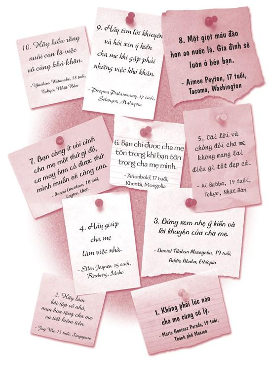
Năm tôi mười bốn tuổi, cha tôi thờ ơ đến nỗi tôi không thích ở gần ông.
Nhưng khi tôi hai mươi mốt tuổi, tôi đã hết sức kinh ngạc trước lượng kiến thức cha đã học được trong bảy năm qua.
- Nhà văn Mark Twain
Vào năm đầu đại học, tôi chơi ở vị trí trung phong trong đội tuyển bóng bầu dục của trường. Lúc đó, đội tôi vừa giành được thắng lợi lớn. Trong trận đấu, tôi đã có nhiều cú đưa bóng vào vùng cấm địa tuyệt đẹp và mọi người có vẻ niềm nở với tôi hơn sau trận đấu.
Tuần tiếp theo chúng tôi sẽ đấu với một trong những đội bóng xuất sắc nhất cả nước trên sân nhà. Tất nhiên tôi muốn chơi thật tốt trước đông đảo khán giả sân nhà. Ngoài ra, cha tôi sẽ bắt chuyến bay về chỉ để xem tôi thi đấu. Tôi đã nghĩ cha sẽ không về kịp, nhưng ông đã có mặt ở sân vận động ngay trước khi hồi còi khai trận vang lên.
Thế nhưng tôi đã có trận đấu tệ hại nhất đời. Tiền vệ phòng ngự ngôi sao của đội bạn ném tôi xuống đất hết lần này đến lần khác. Tôi còn nhớ lúc đó tôi đã nghĩ: Liệu mọi việc còn có thể tồi tệ hơn nữa không? Và rồi mọi việc tồi tệ hơn thật. Tôi đã phạm rất nhiều lỗi ngu ngốc, ném hàng loạt những pha bóng bị chặn và bị dập tơi tả. Đội tôi đã thua với cách biệt khoảng ba mươi điểm.
Sau trận đấu, tôi vô cùng xấu hổ và chỉ muốn trốn biệt đi. Bạn có từng trải qua cảm giác chơi dở tệ và thua thê thảm chưa? Trong phòng thay đồ, mọi người tránh mặt bạn như thể bạn là con bệnh truyền nhiễm. Tôi im lặng tắm rửa và mặc quần áo. Khi tôi bước ra ngoài, cha đang chờ tôi. Ông ôm tôi vào lòng, ghì tôi thật chặt, nhìn thẳng vào mắt tôi và nói: “Đây là trận đấu tuyệt vời nhất cha từng xem con chơi, bởi vì hôm nay con đã hết sức cứng rắn. Con đã chiến đấu rất ngoan cường ngoài sân cỏ. Cha vô cùng tự hào về con”.
Tôi đã bị sốc. Tôi vừa chơi trận bóng tệ hại nhất đời mình và cha lại nói ông vô cùng tự hào về tôi ư? Tôi đã nghĩ không ai có thể giúp tôi cảm thấy khá hơn được sau thất bại ê chề đó, nhưng cha đã làm được. Thay vì nhắc nhở tôi về những lỗi lầm tôi đã mắc phải, ông lại tập trung vào việc duy nhất tôi đã làm tốt: Đó là kiên cường chiến đấu đến phút cuối cùng. Chính những lời động viên của cha đã giúp tôi nhìn nhận lại mọi việc một cách sáng suốt hơn. Thua cuộc cũng không phải là tận thế. Cuộc sống vẫn sẽ tiếp diễn.
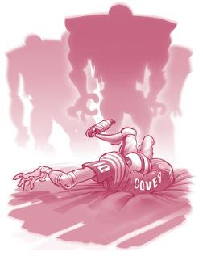
Tôi thật may mắn khi có một người cha tuyệt vời như thế, và cả một người mẹ rất tuyệt vời nữa. Dù cha mẹ nhiều lần khiến tôi bối rối, nhưng tôi biết họ thật sự quan tâm đến tôi. Có nhiều lúc tôi tin rằng họ đến từ một hành tinh khác, nhưng những lúc còn lại cha mẹ tôi là những bậc phụ huynh hết sức tuyệt vời. Nếu không tin, bạn có thể hỏi bạn bè của tôi về họ.
Tôi hy vọng bạn cũng may mắn như tôi. Tôi mong bạn cũng có một người cha và một người mẹ tuyệt vời. Nếu bạn không may mắn được sống chung với cha hoặc mẹ mình, tôi hy vọng bạn được nuôi dạy bởi một người bác, người bà, người cha dượng hay một người bảo hộ tuyệt vời. Mặc dù cũng có những vấn đề của riêng họ và không còn sành điệu như khi họ còn trẻ, nhưng hầu hết các bậc cha mẹ đều rất yêu thương con cái và sẽ làm mọi việc vì con.
Giờ chúng ta sẽ cùng đến với quyết định mang tính bước ngoặt thứ ba: Mối quan hệ với cha mẹ.
Bạn sẽ làm gì với mối quan hệ giữa bạn và cha mẹ bạn? Vì sao đây lại là một trong những quyết định quan trọng nhất trong đời? Bởi vì, dù bạn muốn hay không, cha mẹ cũng là một phần quan trọng trong cuộc sống của bạn suốt một khoảng thời gian khá dài. Mười năm nữa, bạn bè có thể sẽ không còn ở cạnh bạn nữa. Bạn nghĩ bạn bè sẽ luôn bên bạn, nhưng không phải vậy đâu. Các bạn rồi sẽ đi theo những con đường khác nhau. Chỉ có cha mẹ là luôn ở cạnh bạn.
Bạn có thể sẽ sống với cha hoặc mẹ, hoặc cả hai, cho đến khi bạn được mười tám hay mười chín tuổi. Tùy vào bản chất mối quan hệ giữa bạn và cha mẹ, họ sẽ trở thành một chỗ dựa tuyệt vời hay một nỗi xót xa trong quá khứ còn kéo dài dai dẳng suốt nhiều năm về sau. Họ sẽ ở bên cạnh bạn trong rất nhiều sự kiện, chẳng hạn như lễ tốt nghiệp, đám cưới, sinh nhật, đám tang và những lúc thăng trầm trong cuộc đời. Giờ bạn đã biết vì sao mối quan hệ giữa bạn với cha mẹ lại vô cùng quan trọng chưa?
Trong chương này, tôi sẽ sử dụng từ “cha mẹ” để chỉ chung những người có vai trò tương tự đối với bạn. Tôi biết có rất nhiều kiểu gia đình. Bạn có thể được nuôi dưỡng bởi cả cha lẫn mẹ, hay chỉ cha hoặc mẹ, hay cô/dì, chú/bác. Bạn cũng có thể sống với mẹ và cha dượng, sống với bà hay sống với một người giám hộ, v.v. Vì vậy, bất cứ khi nào bạn thấy từ “cha mẹ” hoặc “mẹ” hoặc “cha”, hãy thay thế những từ này bằng một từ thích hợp với hoàn cảnh gia đình của bạn. Gia đình không được xây dựng bằng mối quan hệ huyết thống, gia đình được xây dựng nên nhờ tình yêu thương.
Vậy bạn sẽ chọn con đường nào đây? Bạn có thể chọn đường đúng đắn bằng cách xây dựng mối quan hệ tốt đẹp, giải quyết các vấn đề, thể hiện tình yêu và sự tôn trọng với cha mẹ. Hoặc bạn cũng có thể chọn đường sai lầm bằng cách từ bỏ mối quan hệ, cãi vã hoặc giận hờn mỗi khi có bất đồng ý kiến và thể hiện sự thiếu tôn trọng với cha mẹ mình.
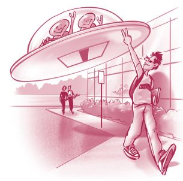

ĐÁNH GIÁ TỔNG THỂ MỐI QUAN HỆ VỚI CHA MẸ
Trước khi đọc tiếp, bạn hãy làm bài kiểm tra nhanh này để đánh giá xem mối quan hệ của bạn và cha mẹ hiện tại thế nào nhé.
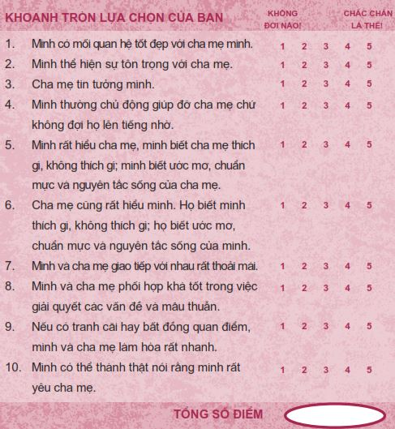
Hãy cộng tất cả điểm số lại xem bạn đạt kết quả thế nào nhé.
Từ 40 - 50 điểm: Bạn đang đi trên đường đúng đắn. Hãy cứ tiếp tục phát huy nhé!
Từ 30 - 39 điểm: Bạn đang bước song song trên cả hai con đường. Hãy bước hẳn sang con đường đúng đắn nhé!
Từ 10 - 29 điểm: Bạn đang ở trên đường sai lầm. Hãy đặc biệt chú tâm vào chương này.
Chương này được chia làm bốn phần. Phần đầu tiên có tên là Tài khoản Mối quan hệ (RBA - Relationship Bank Account) . Cũng giống như Tài khoản Mối quan hệ với bạn bè, đây chính là cách hiệu quả giúp bạn xây dựng mối quan hệ tốt đẹp với cha mẹ mình. Trong phần Cha mẹ thật phiền toái, chúng ta sẽ thảo luận cách đối phó với những việc cha mẹ làm khiến bạn thấy phiền hà và bực mình. Phần Xóa bỏ khoảng cách sẽ khám phá những phương pháp giúp bạn giao tiếp với cha mẹ hiệu quả hơn, dù dường như họ nói tiếng Sao Hỏa trong khi bạn nói tiếng Trái Đất. Tôi biết cha mẹ của một số các bạn có thể đang gặp vấn đề trong cuộc sống. Họ bị nghiện rượu hoặc họ ngược đãi con cái. Nếu rơi vào tình huống này, bạn sẽ cần đến những phương pháp đối phó đặc biệt. Phần cuối cùng - Khi bạn trở thành điểm tựa cho cha mẹ - được viết đặc biệt dành cho các bạn trẻ gặp phải những thách thức dạng này.
Tài khoản Mối quan hệ
Từ nhỏ, tôi đã sớm nhận ra việc khiến mẹ tôi dễ nổi giận nhất chính là việc tôi quên mang rác đi đổ. Gần như sáng thứ Sáu nào tôi cũng nghe mẹ hét: “Sean, vác xác ra khỏi giường mau! Mẹ nghe tiếng xe rác đang đến và con lại quên đem rác đi đổ nữa rồi kìa!”. Sau cùng, mẹ phải dùng đến cách dán những tờ giấy ghi chú khắp nơi - trên cửa, trên tủ lạnh, trên bàn trang điểm và ngay cả trên gối nằm của tôi; những tờ giấy thường có nội dung: “SEAN, ĐI ĐỔ RÁC NGAY NẾU KHÔNG MUỐN CHẾT!”.
Tuy nhiên, tôi cũng học được nhiều cách làm cho mẹ vui. Mẹ rất vui mỗi khi tôi được điểm cao. Mẹ sẽ dán phiếu liên lạc của tôi lên tường để bạn bè của mẹ nhìn thấy rồi bà sẽ khoe về tôi hết nấc. Mẹ cũng rất vui lòng mỗi khi tôi giúp bà rửa chén hay mang hàng tạp phẩm vào nhà. Đó là cách tôi bù đắp cho những lần tôi quên mang rác đi đổ, là cách tôi giữ cho mối quan hệ giữa tôi và mẹ luôn ở mức điểm dương.
Trong chương trước, khi nói về bạn bè, chúng ta đã bàn về Tài khoản Mối quan hệ, đây là thứ đại diện cho mức độ tin tưởng bạn có trong một mối quan hệ. Vậy Tài khoản Mối quan hệ của bạn với cha mẹ bạn hiện như thế nào? Nếu 1.000 đô-la đại diện cho một mối quan hệ khăng khít với cha mẹ, vậy bạn đã ký gửi được bao nhiêu rồi? Số dư trong tài khoản của bạn có đạt mức 1.000 đô-la không, hay chỉ 500 đô-la thôi? Hay bạn không còn đồng nào trong tài khoản hay thậm chí còn đang thâm hụt đến 1.000 đô-la? Bất kể Tài khoản Mối quan hệ của bạn đang trong tình trạng ra sao, công thức vẫn như nhau: Bạn xây dựng mối quan hệ qua từng lần ký gửi.
Dưới đây là năm khoản ký gửi có vẻ rất hiệu quả với cha mẹ. Tất nhiên, tương ứng với mỗi khoản ký gửi là một khoản rút ra.
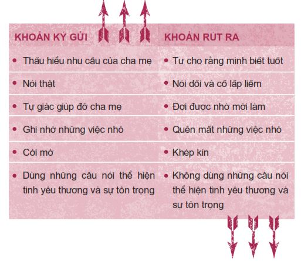
THẤU HIỂU NHU CẦU CỦA CHA MẸ
Hãy nhớ rằng các “khoản tiền” gửi hay rút đối với bạn và cha mẹ bạn là không giống nhau. Khi bạn mời bạn bè đến nhà, có thể bạn sẽ xem việc cha mẹ để mặc cho các bạn tự do thoải mái chính là một khoản tiền gửi. Nhưng khi cha mẹ bạn mời bạn bè họ đến nhà, việc bạn niềm nở trò chuyện với mọi người mới chính là một khoản tiền gửi đối với họ. Bạn thấy đấy, khái niệm những khoản tiền gửi của cha mẹ bạn khác với bạn. Tôi đã hỏi vài bậc phụ huynh câu hỏi: “Đâu là ‘khoản tiền gửi’ lớn nhất con cái các bạn có thể gửi vào Tài khoản Mối quan hệ của các bạn?”. Hãy cẩn thận lắng nghe những điều họ chia sẻ nhé.
• “Đọc sách.”
• “Giữ phòng riêng đủ sạch sẽ để ít nhất tôi còn dám mở cửa bước vào.”
• “Đối xử tốt với các em của nó.”
• “Tôi vào phòng của con gái để chào các bạn của con và nói chuyện dăm ba câu. Khi tôi đi ra, con bé và các bạn của nó nói: ‘Hãy ở lại nói chuyện với bọn con đi ạ’. Quả là một khoản tiền gửi khổng lồ!”
• “Con gái tôi tham dự một hội nghị nơi các học sinh được khuyến khích tha thứ tất cả những lỗi lầm cha mẹ mình từng mắc phải. Con bé đã nói với tôi rằng nó cảm thấy tôi đã làm mọi việc quá hoàn hảo rồi. Wow!”
• “Tự giác làm việc nhà mỗi ngày mà không đợi cha mẹ phải lên tiếng yêu cầu.”
• “Tự giác làm mọi việc.”
Trên đây là những gợi ý rất hữu ích và bạn có thể ghi rất nhiều điểm với cha mẹ nếu thử làm một vài việc nêu trên.
NÓI THẬT
Nói dối là cách hủy hoại lòng tin của cha mẹ nhanh nhất. Đây là một khoản tiền rút khổng lồ và bạn sẽ phải mất nhiều tháng, thậm chí nhiều năm mới có thể lấy lại lòng tin của cha mẹ. Một bạn trẻ từng chia sẻ: “Hãy trung thực. Sự thật có thể mất lòng, nhưng việc để cha mẹ phát hiện ra bạn nói dối còn mất lòng hơn gấp mười lần”.
Sự thật là cha mẹ bạn rồi cũng sẽ phát hiện ra bạn nói dối thôi. Bậc phụ huynh nào cũng có khả năng phát hiện nói dối hết sức tài tình và họ có thể đánh hơi ra những điều bạn đang cố che giấu. Vì vậy, hãy thẳng thắn với cha mẹ bởi vì sự trung thực luôn đúng.
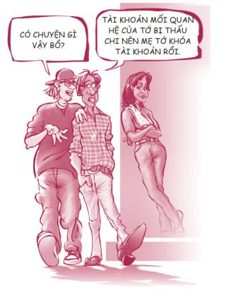
Câu chuyện của Janna là một minh chứng rõ ràng cho quan điểm này.
Năm mười ba tuổi, mình gặp Alfonso; năm đó anh ấy mười bảy tuổi. Bọn mình nghĩ bọn mình yêu nhau. Thế nhưng cha mẹ mình lại không muốn để mình hẹn hò trước năm mười sáu tuổi, đặc biệt là với một anh chàng lớn tuổi hơn. Mọi mâu thuẫn bắt đầu từ đó.
Một buổi tối thứ Sáu nọ, vì thật sự rất muốn đi chơi với Alfonso nên mình đã nói dối cha mẹ mình sẽ sang nhà một đứa bạn gái rồi đi gặp anh ấy. Chỉ một tiếng sau, cha mẹ đã phát hiện ra mình nói dối và thế là mình tiêu đời. Mình không được phép nói chuyện với Alfonso nữa, mình bị cấm túc suốt hai tuần lễ đồng thời không được sử dụng điện thoại. Mình muốn phát điên lên!
Cái vòng lẩn quẩn “lén lút hẹn hò rồi bị phát hiện” cứ thế tiếp diễn suốt nhiều năm trời. Mọi việc thật khó khăn với mình vì mình cũng yêu cha mẹ, mình chỉ muốn họ nhận ra Alfonso không phải người xấu và đồng ý để mình được ở cạnh anh ấy. Alfonso và mình vẫn quen nhau, nhưng mối quan hệ giữa mình và cha mẹ rất tệ. Cha mẹ không tin tưởng mình còn mình thậm chí không muốn nhìn mặt họ.
Năm lên mười sáu tuổi, mình vô cùng hạnh phúc vì giờ đây mình đã có thể công khai hẹn hò với Alfonso. Bọn mình công khai hẹn hò được khoảng sáu tháng. Rồi mình chợt nhận ra mình đã bỏ lỡ quá nhiều thứ và mình chỉ muốn được làm một cô gái tuổi teen bình thường. Anh ấy lớn hơn mình và giờ đã vào đại học trong khi mình vẫn chưa sẵn sàng. Mình quyết định chia tay với Alfonso và xin lỗi cha mẹ mình.
Mối quan hệ giữa mình và cha mẹ không dễ hàn gắn chút nào. Mình đã nói dối cha mẹ trong một khoảng thời gian quá dài và hiện tại họ không còn chút lòng tin nào ở mình nữa. Mình cảm thấy như đang bước đi trên vỏ trứng vậy. Mình biết việc lấy lại niềm tin cần nhiều thời gian. Mình cố gắng làm mọi việc có thể. Mình dọn dẹp nhà, chăm sóc các em và trên hết, mình luôn nói thật với cha mẹ.
Dần dần, cha mẹ cũng cảm nhận được mình đang thật sự cố gắng khắc phục những sai lầm ngày xưa nên đã bắt đầu cởi mở trở lại với mình. Mình biết cha mẹ vẫn luôn yêu thương mình và để đáp lại, mình cũng cần thể hiện tình yêu của mình với cha mẹ. Giờ mình đã nhận ra cha mẹ hiểu về cuộc đời nhiều hơn mình.
TỰ GIÁC GIÚP ĐỠ CHA MẸ
Chén bát có cần được rửa không? Em gái bạn có cần người đón về không? Mẹ bạn có đang cần nghỉ ngơi một chút không? Nếu có, đừng đợi người lớn yêu cầu, hãy quan sát xem xung quanh có việc gì cần làm và làm ngay đi.
Ryan, mười ba tuổi, tâm sự: “Cha mẹ chưa bao giờ thật sự kỳ vọng gì nhiều ở mình. Họ chỉ cần mình chăm chỉ làm bài tập về nhà và thu xếp vài việc cá nhân, chỉ vậy thôi. Một lần nọ, mẹ mình thật sự rất mệt sau bữa tối và mình đã đề nghị dọn dẹp nhà bếp giúp mẹ. Mẹ mình vui phát khóc. Mình thật sự hạnh phúc khi có thể giúp mẹ được nghỉ ngơi một chút”.
Nếu bạn có em, một trong những cách đỡ đần cha mẹ tốt nhất là làm bạn với em và giúp cha mẹ chăm sóc em. Tôi còn nhớ khi cậu em trai Joshua của tôi bắt đầu vào trung học, cha tôi đã vô cùng lo lắng cho em ấy. Thằng bé vừa chuyển trường nên gần như không quen biết ai ở trường. Thằng bé lại ốm yếu và vụng về. Tôi có thể cảm nhận được sự trăn trở của cha nên đã cố gắng ở bên cạnh Joshua. Tôi thậm chí còn giúp huấn luyện đội bóng tân binh của em. Tôi sẽ không bao giờ quên cha đã cảm kích nỗ lực của tôi ra sao. Thật tuyệt vời!
GHI NHỚ NHỮNG VIỆC NHỎ
Trong nhiều mối quan hệ, những việc nhỏ thật ra chính là việc lớn. Thế những việc nhỏ ấy là gì? Một lời tử tế, một nụ cười ấm áp, một mẩu giấy ghi lời cảm ơn. Gabby đã kể tôi nghe câu chuyện sau đây:
Mặc dù không đến nỗi là không thể hàn gắn, nhưng mối quan hệ giữa mẹ và mình vẫn tồn tại những tổn thương nhất định. Mình đã quyết định viết cho mẹ một lá thư để bày tỏ rằng mẹ có ý nghĩa nhiều như thế nào với mình. Một buổi sáng, mình đã đặt lá thư ấy vào xe mẹ rồi tiếp tục công việc hằng ngày. Sau đó, mình không suy nghĩ nhiều về lá thư nữa. Thật ngạc nhiên làm sao, khi mình trở về nhà tối hôm đó, mẹ đang đứng ở cửa chờ mình và tiến tới ôm mình vào lòng thật chặt. Mẹ nói đó là món quà tuyệt nhất mẹ từng nhận được từ mình - dù đó chỉ là một lời cảm ơn giản dị và sự công nhận tất cả những gì mẹ đã làm.
Câu chuyện này nhắc tôi nhớ đến hồi tôi tặng mẹ một món quà đặc biệt nhân Ngày của Mẹ. Thay vì mua cho mẹ lọ nước hoa mà mẹ vẫn thường giả vờ cảm kích (“Ôi, Sean. Lại là nước hoa đấy à! Thật tuyệt làm sao!”), tôi đã sáng tác một bài thơ ca ngợi mẹ có tựa đề Con trai và Mẹ. Mẹ đã nói với tôi đó là món quà tuyệt nhất tôi từng tặng bà và thậm chí còn treo bài thơ lên “bức tường danh vọng” của bà nữa.
CỞI MỞ
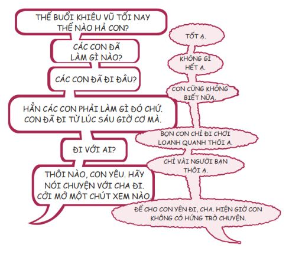
Bạn có thấy cuộc trò chuyện này nghe quen không? Nếu có thì đây cũng là việc vô cùng bình thường. Có những lúc bạn đơn giản là không muốn nói chuyện, đặc biệt là khi cuộc nói chuyện bắt đầu có hơi hướm của một cuộc hỏi cung. Tuy nhiên, mọi việc đều có thời điểm thích hợp của nó - có lúc cần đóng và có lúc cần mở. Thực tế, bạn sẽ không thể thân thiết với cha mẹ mình nếu bạn không chia sẻ suy nghĩ của mình với họ.
Các bạn trẻ thường cảm thấy khó mở miệng hỏi: “Cha/mẹ nghĩ con nên làm gì?”. Nhưng hỏi cha mẹ câu hỏi này là một việc làm rất thông minh, bởi cha mẹ có thể không phải lúc nào cũng trông thật ngầu, nhưng họ thường rất khôn ngoan. Bạn có thể hiểu biết về thời trang và các xu hướng mới hơn cha mẹ, nhưng cha mẹ lại biết nhiều hơn bạn những vấn đề liên quan đến tình yêu và hạnh phúc. Cha mẹ đặc biệt rất giỏi trong việc giúp đỡ bạn đối phó với sự phản bội, giải quyết các câu chuyện đầy bi kịch về bạn trai/bạn gái và giúp bạn cảm thấy khá hơn khi bạn phải trải qua một ngày tồi tệ.
Một lần nọ, một người bạn cũ của gia đình đã nói với tôi: “Sean, nếu cháu chịu bàn với cha mẹ về tất cả những quyết định quan trọng của mình, cháu sẽ không bao giờ mắc phải những sai lầm nghiêm trọng”. Lời khuyên của bác ấy đặc biệt đến nỗi tôi không bao giờ quên và tôi luôn cố gắng nghe theo lời bác.
Nhưng nếu bạn muốn cởi mở với cha mẹ mà lại sợ hệ quả của việc đó thì sao? Bạn sợ cha mẹ sẽ nổi giận hoặc thất vọng và thốt ra những lời đại loại như: “Con đã làm gì cơ?!” hoặc “Thật là một ý tưởng ngu ngốc!”. Tôi xin chia sẻ với bạn một phương pháp gần như luôn có hiệu quả. Hãy mở lời với cha mẹ kiểu thế này: “Mẹ ơi, có việc này con thật sự muốn nói với mẹ, nhưng con sợ mẹ sẽ nổi giận nếu con nói ra”.
Mẹ bạn sẽ nói: “Ồ không, mẹ không nổi giận đâu”.
“Có đấy ạ. Mẹ luôn nổi giận và con sẽ phải hối tiếc vì đã nói mọi chuyện với mẹ.”
“Mẹ hứa đấy, con yêu. Mẹ sẽ không nổi đóa lên đâu. Hãy nói cho mẹ biết có việc gì nào”. Đến lúc này, mẹ bạn đã tò mò đến nỗi bà sẽ tìm hiểu cho ra bạn đã gặp chuyện gì.
“Dạ được rồi. Nhưng mẹ phải hứa mẹ sẽ chỉ lắng nghe và không được nổi giận nhé.”
Cách tiếp cận này giúp cha mẹ bạn chuẩn bị tâm lý cho những điều bạn sắp nói. Nhờ vậy, họ sẽ lắng nghe kỹ hơn và cẩn thận hơn trong cách mình phản ứng.
DÙNG NHỮNG CÂU NÓI THỂ HIỆN TÌNH YÊU THƯƠNG VÀ SỰ TÔN TRỌNG
Nếu bạn muốn sống hòa hợp với cha mẹ, hãy ghi nhớ những từ ngữ và câu nói quan trọng sau. Từ đầu tiên là làm ơn . Từ tiếp theo là cảm ơn . Câu nói quan trọng bạn cần nhớ chính là Con yêu cha/mẹ . Và câu cuối cùng chính là Con có thể giúp được gì ạ? Những câu nói vừa nêu đều ẩn chứa sức mạnh và ma thuật.
Từ làm ơn thể hiện phép lịch sự và sự tôn trọng. Từ cảm ơn cũng vậy. Thứ dễ khiến cha mẹ mất bình tĩnh nhất chính là sự vô ơn. Vì vậy, hãy tìm cách nói lời cảm ơn cha mẹ bất cứ khi nào có thể.
“Cảm ơn mẹ! Bữa tối ngon hết sảy.”
“Con cảm ơn cha rất nhiều vì đã cho con mượn xe tối qua. Con đã có một buổi tối rất tuyệt vời.”
Con yêu cha/mẹ là những lời kỳ diệu tiếp theo bạn cần nhớ. Trong một số gia đình, những cái ôm và lời nói yêu thương được trao cho nhau hết sức thoải mái. Nhưng ở một số gia đình khác, không khí lại hết sức lạnh lẽo. Nếu gia đình bạn thuộc dạng này, hãy cố gắng trở thành người tiên phong phá vỡ vòng lẩn quẩn và giúp các thành viên trong gia đình xây dựng thói quen bày tỏ tình cảm bằng nhiều cách khác nhau. Chỉ một người khởi xướng cũng có thể tạo nên những thay đổi lớn lao. Dưới đây là cách Sherwin thực hiện được điều đó.
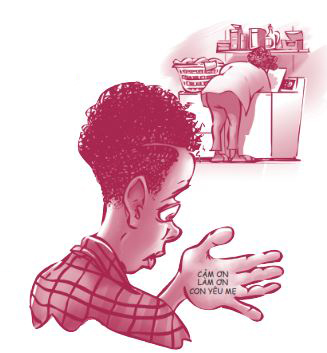
Cha mình là một người cha tuyệt vời, chỉ có điều cha hơi nóng tính, việc này nhiều lúc khiến mình thấy hơi sợ. Hồi mình còn nhỏ, cha rất hay la rầy và có lúc khiến mình cảm thấy tổn thương ghê gớm. Nhưng tận đáy lòng, mình không hề trách cha. Mình luôn nghĩ đó là do lỗi của mình.
Lúc bấy giờ, mình có xem một chương trình truyền hình thực tế. Trong chương trình đó, người cha không may qua đời trong lúc con ông vẫn chưa kịp nói “Con yêu cha” lần nào. Lúc đó mình đã nghĩ: Biết đâu mình cũng không còn cơ hội nói với cha rằng mình yêu cha và điều cuối cùng mình nói với cha lại là: “Dạ, con sẽ bỏ món lasagna vào lò nướng ngay đây”. Kể từ đó, mỗi ngày mình đều ôm cha một cái. Đó là cách mình bày tỏ “Con yêu cha”.
Lần đầu tiên mình ôm cha, mình đã rất ngạc nhiên vì cha không thấy chuyện đó kỳ cục. Mình đã nói với cha rằng mình không bao giờ muốn xa cha. Bất luận có chuyện gì xảy ra, mình muốn cha con mình sẽ luôn bên cạnh nhau. Cha cũng có cùng suy nghĩ với mình. Cha đảm bảo rằng mình luôn có thể tìm đến cha bất cứ khi nào mình cần ông. Mình rất yêu cha. Dù có những lúc mình không thích tính cộc cằn của cha, mình vẫn ôm ông mỗi ngày. Cha cũng không thắc mắc gì về việc đó. Mối quan hệ của cha con mình cứ thế tốt lên từng ngày.
James Taylor từng hát:
Con có thể giúp được gì ạ? chính là câu nói kỳ diệu tiếp theo. Cảnh báo: Nhớ đảm bảo cha mẹ bạn đã ngồi xuống khi bạn thử nói ra điều này bởi câu nói diệu kỳ này có thể khiến họ ngã lăn ra đất đấy.
“Mẹ ơi, con biết hiện giờ mẹ đang rất căng thẳng. Con có thể giúp được gì không?”
Khi cha bạn than phiền: “Ôi không! Nhìn cái nhà xe kìa. Trông như thể một cơn lốc xoáy vừa quét qua đây vậy”.
Bạn liền đáp lời: “Con có thể giúp được gì không cha?”.
Sau tất cả những gì đã được đề cập trong phần xây dựng Tài khoản Mối quan hệ với cha mẹ, nếu tôi phải tóm gọn mọi thứ lại thành chỉ một câu, đó sẽ là: Hãy luôn giữ phòng bạn sạch sẽ. Vì một số lý do lạ lùng nào đó, các bậc phụ huynh thật sự rất thích điều này. Thậm chí bạn có thể phạm cả đống lỗi, nhưng chỉ cần bạn giữ cho phòng ốc sạch sẽ thì mọi lỗi lầm đều được tha thứ. Điều này đặc biệt hữu ích khi phòng của em bạn bừa bộn, bởi vì khi đem ra so sánh, bạn sẽ trở nên sáng giá hơn.
Cha mẹ thật phiền toái
Chúng ta đều biết rằng thỉnh thoảng các bậc phụ huynh có thể rất phiền phức. Cụ thể, năm lời phàn nàn thường gặp ở các bạn trẻ là:
>> CHA MẸ LUÔN SO SÁNH MÌNH VỚI NGƯỜI KHÁC.
>> CHA MẸ KHÔNG BAO GIỜ HÀI LÒNG.
>> CHA MẸ HAY KHIẾN MÌNH XẤU HỔ.
>> CHA MẸ HAY BẢO VỆ THÁI QUÁ.
>> CHA MẸ CỨ CÃI NHAU SUỐT.
Khi đối mặt với những lời phàn nàn này, bạn cần phải đưa ra lựa chọn. Bạn có thể lựa chọn để những lời phàn nàn làm mình điên tiết và nhặng xị lên. Hoặc bạn có thể tìm cách đối phó với vấn đề.
Nếu bạn đang khó chịu vì tính khí của cha mẹ, hãy tập trung vào “vòng tròn những điều có thể kiểm soát” của mình. Đừng lãng phí năng lượng vào những thứ mà bạn không thể kiểm soát, chẳng hạn như những khuyết điểm của cha mẹ hay các thói quen phiền toái của họ. Hãy tập trung vào những gì bạn có thể kiểm soát, chẳng hạn như thái độ và phản ứng của bạn đối với những việc cha mẹ làm. Bạn không thể thay cha mẹ lựa chọn. Bạn chỉ có thể lựa chọn cho chính mình.
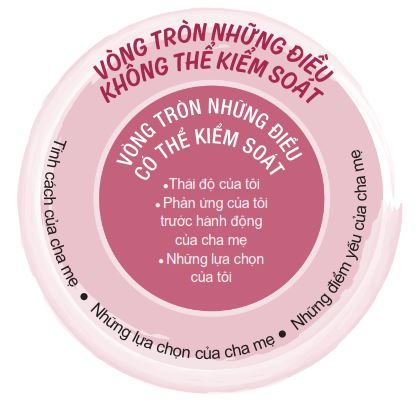
CHA MẸ LUÔN SO SÁNH MÌNH VỚI NGƯỜI KHÁC
“Sao con không được như anh con nhỉ?” Ôi .
“Sao con lại không tham gia vào các hoạt động ngoại khóa như bạn Tayva của con nhỉ? Giờ cuộc sống con bé đã đâu vào đó cả rồi.” Ôi .
Sondra kể với tôi rằng cô bé luôn cảm thấy mình bị cha hạ thấp mỗi khi ông so sánh em với người khác.
Hồi mình còn nhỏ, cha mình thật sự rất tuyệt vời, nhưng giờ ông không còn thế nữa. Mình có hai em trai và một chị gái. Mình và chị gái chỉ cách nhau mười một tháng tuổi. Cha rất hay so sánh mình với chị. Chị ấy rất thông minh. Cha luôn nói với mình: “Con chưa đủ năng lực”. Ông còn nói mình không có tố chất của một sinh viên đại học. Nhưng không sao cả. Ý mình là mình đã dần quen với việc đó rồi.
Gần đây, cả nhà mình có đến nhà cô mình chơi. Cha và cô bắt đầu nói chuyện với nhau về việc ai trông giống ai. Cha mình nói: “Đúng vậy, Sondra trông giống anh, nhưng đầu óc con bé lại chẳng giống anh chút nào, chỉ có chị nó thừa hưởng điểm này từ anh”. Cha mình và chị mình đều có vầng trán cao. Cha nói thêm: “Những người trán cao rất thông minh, thế nên dễ hiểu vì sao trán Sondra lại thấp như thế”. Mình thật sự cảm thấy bản thân vô cùng tồi tệ. Mình cũng muốn có được mối quan hệ tốt đẹp với cha giống như chị mình.
Tôi dám cá với bạn là cha của Sondra thật sự rất thương bạn ấy. Ông ấy chỉ không ý thức được mình đang làm tổn thương cảm xúc của con mình nhiều đến mức nào. Thỉnh thoảng chúng ta vẫn so sánh bản thân với cô gái có mái tóc hoàn hảo hay chàng trai có điểm trung bình môn 4,0/4,0 đó thôi. Việc ngừng so sánh không hề dễ dàng và cha mẹ chúng ta cũng cảm thấy như vậy. Đó là khuynh hướng chung của con người. Vì một số lý do lạ lùng nào đó và với ý định tốt, cha mẹ nghĩ rằng việc so sánh bạn với người khác sẽ tạo động lực để bạn tiến bộ. Và tất cả chúng ta đều biết rằng việc đó thường có tác dụng hoàn toàn trái ngược.
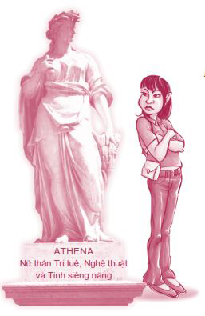
Đôi khi cha mẹ không thẳng thừng so sánh bạn với người khác mà chọn cách đầy ẩn ý và khó nhận ra hơn. Như McKayla chia sẻ: “Mẹ mình hay khen bạn bè mình nữ tính, ngụ ý rằng mình không nữ tính chút nào”.
Nếu bạn cảm thấy mình đang bị so sánh với người khác quá nhiều, hãy cân nhắc những cách giải quyết sau. Đầu tiên, cố gắng đừng để bụng. Hãy ghi nhớ cảm giác khó chịu hiện tại và hạ quyết tâm không làm điều tương tự với con cái của mình về sau. Tiếp theo, có thể bạn nên chia sẻ cảm giác của mình với cha mẹ. Lần tới, nếu cha hay mẹ còn so sánh bạn với anh chị em của bạn, một người bạn của bạn hay một vị thần Hy Lạp nào đó, hãy từ tốn nói với họ: “Cha/mẹ ơi, việc cha mẹ so sánh con với người này người kia thật sự làm con tổn thương. Con hoàn toàn khác với những người đó và con thật sự mong cha mẹ đừng so sánh như vậy”.
Tất cả chúng ta đều muốn được cha mẹ yêu thương. Tôi còn nhớ một lần nọ, tôi đi dự tiệc cùng gia đình và vô tình nghe thấy một người bạn hỏi cha tôi: “Trong mấy đứa con trai của anh, đứa nào giống anh nhất?”. Cha tôi trả lời: “Ồ, anh không biết nữa. Anh nghĩ chắc Joshua giống anh hơn mấy đứa còn lại một chút”. Tôi đã cảm thấy rất buồn, như thể cha thật sự thích Joshua nhiều hơn tôi. Đây chỉ là một việc nhỏ và cha tôi cũng không có ác ý gì. Nhưng việc đó đã khiến tôi nhận ra hai điều: Chúng ta đều khao khát được cha mẹ mình yêu thương và chúng ta rất sợ bị đem ra so sánh với người khác.
Tất cả chúng ta đều có những điểm khác biệt và những giá trị riêng, không thể đem đi so sánh với bất kỳ ai. Tôi thích cách nói của Ruth Vaughn:
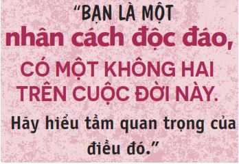
CHA MẸ KHÔNG BAO GIỜ HÀI LÒNG
Sarina kể với tôi:
Mình và cha gần như không bao giờ nhìn thẳng vào mắt nhau. Cha luôn cho rằng mình có thể học tốt hơn nữa, dù học kỳ trước mình đã đạt đến sáu điểm A và hai điểm C. Tất cả những gì cha có thể nói với mình là: “Hãy chăm học hơn nữa và đạt điểm cao vào”. Câu nói của cha thật sự khiến mình phát điên.
Đây là một thách thức kinh điển mà tôi gọi là hội chứng “Không bao giờ hài lòng”. Cha mẹ bạn cứ rầy la bạn suốt. Dường như bạn không thể làm việc gì cho ra hồn. Bạn rất muốn cha mẹ tự hào về mình nhưng lại không sao khiến họ hài lòng được.
Nếu hiện tại bạn đang trải qua chuyện tương tự, đừng vội nghĩ rằng cha mẹ không thương bạn. Cũng giống như chuyện so sánh, các bậc phụ huynh thường không nhận ra những việc họ đang làm và họ nghĩ rằng họ làm thế vì muốn tốt cho bạn. Cũng rất có thể cha mẹ bạn đã từng được nuôi dạy theo cách tương tự. Người ta không trở thành cha mẹ với một quyển cẩm nang hướng dẫn cách trở thành một bậc phụ huynh tuyệt vời.
Một việc khác bạn có thể thử chính là chỉ ra cho cha mẹ bạn thấy tất cả những việc tốt đẹp bạn đang làm. Ví dụ, Sarina có thể trả lời cha bạn ấy như sau: “Vâng, con biết con có thể học tốt hơn nữa cha ạ. Nhưng cha không thấy việc đạt được sáu điểm A trong học kỳ vừa qua là rất tốt rồi sao? So với năm ngoái, kết quả như thế đã là sự tiến bộ vượt bậc rồi ạ”.
CHA MẸ HAY KHIẾN MÌNH XẤU HỔ
Tôi không biết cha mẹ bạn thế nào, nhưng hồi tôi còn nhỏ, cha mẹ tôi đã khiến tôi xấu hổ ghê gớm đến nỗi tôi không còn biết xấu hổ là gì nữa, như thể tôi đã phát triển khả năng miễn dịch với cảm giác xấu hổ vậy.
Tôi được sinh ra ở Ireland và gia đình tôi sống ở đó được vài năm. Trong khoảng thời gian ấy, mẹ tôi đã kịp tiếp thu một số truyền thống bản địa. Khi chúng tôi quay về Mỹ, vào mỗi dịp lễ Thánh Patrick, mẹ sẽ đến trường tiểu học của tôi trong bộ tóc giả to tướng và một thùng bánh quy hình cỏ ba lá cũng to không kém. Rồi mẹ sẽ hát một liên khúc các bài dân ca Ireland như bài Khi những đôi mắt Ireland mỉm cười bằng giọng opera. Thầy cô và bạn bè của tôi lúc nào cũng tỏ ra vô cùng thích thú trước màn biểu diễn ấy. Chỉ có tôi là trốn xuống dưới gầm bàn, muốn chết đi vì xấu hổ.
Cha tôi là một tác giả và mọi người thường hỏi tôi: “Hóa ra cậu là con trai của Stephen R. Covey à?”
“À đúng thế.”
“Wow! Cảm giác khi có một người cha nổi tiếng như thế là như thế nào nhỉ?”
“Ơ, tớ không biết nữa.”
“Cậu làm ơn chuyển lời với cha cậu là sách của ông ấy đã thay đổi cuộc đời tớ nhé!”
“Ừ, được thôi, sao cũng được”, tôi trả lời.
Nhưng những lúc như thế, tôi hay thầm nghĩ: “Cậu có biết việc cha tớ chạy bộ với đôi vớ đen cao đến đầu gối không nhỉ?”.
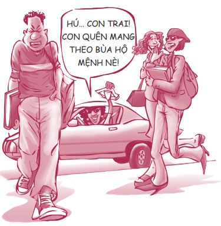
Khi tôi mười chín tuổi, cuối cùng tôi cũng đọc một trong những quyển sách cha viết để xem tại sao mọi người lại bị ông mê hoặc như thế và tôi đã hết sức kinh ngạc về tầm hiểu biết sâu rộng của ông.
Rất có thể cha mẹ bạn cũng thường khiến bạn xấu hổ như cha mẹ tôi đã từng. Hoặc cũng có thể họ không biết chút gì về thời trang và âm nhạc. Nhưng thế thì đã sao? Ta luôn có thể tìm đến cha mẹ mỗi khi cần ý kiến cho những vấn đề hệ trọng, chẳng hạn như làm thế nào để phục hồi sau khi vừa bị ngã gục.
Nếu bạn vẫn chưa nhận ra thì hãy nhớ rõ điều này: Cha mẹ chúng ta từng trải hơn chúng ta. Anya, một học sinh ở Florida, nói: “Cha mẹ đã trải qua rất nhiều chuyện. Họ chính là nguồn kiến thức về thế giới thật số một của tôi”.
Cha mẹ thường thông minh hơn bạn nghĩ đấy. Điều này được thể hiện trong câu nói mà tôi từng đọc ở đâu đó: “Các bậc cha mẹ chỉ tuyệt vời bằng một nửa những gì đứa con nhỏ nghĩ về họ và họ chỉ ngốc nghếch bằng một nửa những gì mà đứa con tuổi teen nghĩ về họ”.
CHA MẸ HAY BẢO VỆ THÁI QUÁ
Bạn có bao giờ cảm thấy cha mẹ đang kiểm soát bạn thái quá hay không?
Hãy đánh dấu vào những phát biểu đúng với cha mẹ bạn.
□ Cha mẹ luôn phải biết chính xác mình đã đi đâu và mình đi với ai.
□ Cha mẹ đặt một lệnh giới nghiêm hết sức nghiêm ngặt với mình.
□ Cha mẹ luôn giúp mình giải quyết vấn đề khi mình gặp rắc rối.
□ Cha mẹ thường có thái độ phán xét với những người bạn mình chơi chung.
□ Cha mẹ đề ra tiêu chuẩn rất cao về đối tượng mình hẹn hò.
□ Nếu mình làm hỏng việc, cha mẹ sẽ cấm đoán mình nhiều hơn.
□ Cha mẹ nói rất nhiều và không tôn trọng sự riêng tư của mình.
□ Cha mẹ quá nghiêm khắc và có quá nhiều luật lệ.
Nếu bạn đánh dấu vào quá nhiều mục trong số những mục được nêu, có hai khả năng có thể xảy ra: Cha mẹ bạn không tin tưởng bạn hoặc cha mẹ quá quan tâm đến bạn. Trong hầu hết các trường hợp, các bậc cha mẹ được cho là bảo vệ thái quá chỉ đơn thuần là quá quan tâm đến con cái và họ thể hiện sự quan tâm ấy bằng các luật lệ và nhu cầu luôn muốn biết mọi thứ về con mình. Vì vậy, đừng quá lo lắng về những luật lệ của cha mẹ. Sau cùng, nếu phải chọn một trong hai, bạn nghĩ mình muốn có cha mẹ quan tâm đến mình quá nhiều hay cha mẹ không quan tâm đến mình chút nào cả?
Nếu bạn hoàn toàn xứng đáng được cha mẹ tin tưởng nhưng họ vẫn nghiêm khắc một cách kỳ cục, bạn có thể làm gì đây? Thật không may, tôi không có câu trả lời nào tốt hơn ngoài lời khuyên: Hãy tiếp tục sống sao cho xứng đáng với lòng tin của cha mẹ. Hãy tiếp tục thành thật. Nhưng bạn cũng nên cẩn thận, đừng quá bận tâm về sự nghiêm khắc của cha mẹ đến mức khiến bản thân muốn nổi loạn nhé.
Một trong những thách thức lớn nhất đối với các bạn trẻ chính là giờ giới nghiêm. Các bậc cha mẹ rất thích giờ giới nghiêm, còn các bạn trẻ lại hoàn toàn không thích. Dù thích hay không, hầu hết các bạn trẻ đều có giờ giới nghiêm, dù họ có chịu thừa nhận chuyện này hay không. Tất cả các bạn trẻ đều cho rằng giờ giới nghiêm được đặt ra là để hủy hoại mọi niềm vui trong cuộc sống của chúng ta. Tuy nhiên, thật ra cha mẹ bạn đặt ra giờ giới nghiêm là vì lo lắng về ma túy, những tay tài xế say rượu và những kẻ biến thái đi lang thang trong đêm. Nghe có vẻ kỳ cục, nhưng đó là sự thật. Thậm chí giờ giới nghiêm còn có thể có lợi cho bạn trong vài trường hợp. Nếu bạn phải thoát khỏi một tình huống không mấy thoải mái, bạn có thể viện lý do giờ giới nghiêm: “Xin lỗi, nhưng mình phải đi đây. Đã tới giờ giới nghiêm tào lao của mình rồi”.
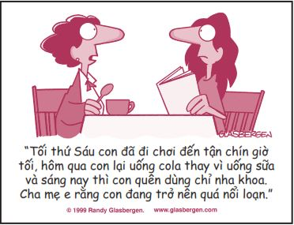
Tin vui là giờ giới nghiêm thường có thể được đàm phán lại một chút. Dưới đây là ba kỹ thuật đàm phán giờ giới nghiêm bạn có thể tham khảo.
1. Bánh ít đổi đi, bánh quy đổi lại. Thỉnh thoảng cha mẹ sẽ nới lỏng luật lệ một chút nếu bạn giúp cha mẹ làm những việc đáng ghi nhận. “Mẹ ơi, nếu con dọn sạch tầng hầm, mẹ có thể cho con về trễ một chút vào tối thứ Sáu này được không mẹ?”
2. Nguồn dự trữ lòng tin. Hãy thể hiện bạn là người có trách nhiệm bằng cách nghiêm chỉnh tuân thủ giờ giới nghiêm trong một khoảng thời gian dài để gầy dựng nguồn dự trữ lòng tin dồi dào ở cha mẹ. “Mẹ ơi, nếu con tuân thủ nghiêm ngặt giờ giới nghiêm của con suốt mùa hè, chúng ta có thể mở rộng giờ giới nghiêm thêm một tiếng đồng hồ bắt đầu từ mùa thu tới được không mẹ?”
3. Sự kiện lớn. Nếu một sự kiện lớn sắp diễn ra, hãy thông báo trước với cha mẹ về việc đó. Cha mẹ thường sẽ sẵn lòng chấp nhận một vài ngoại lệ. “Mẹ ơi, thứ Bảy tuần sau Laura có tổ chức tiệc nhân dịp nghỉ giữa kỳ. Mẹ cho con về trễ một tối được không ạ?”
CHA MẸ CỨ CÃI NHAU SUỐT
Bầu không khí trong gia đình bạn thế nào? Mọi người sống trong hòa bình hay chiến tranh? Một bạn trẻ tâm sự: “Cha mẹ mình rất hay cãi nhau. Tuy sau đó họ luôn làm lành, nhưng mình vẫn thấy rất sợ”.
Nếu có thêm chút rượu vào những cuộc cãi vã thì mọi thứ càng dễ bùng nổ hơn. April đã chia sẻ với chúng ta câu chuyện liên quan đến vấn đề này: “Cha mình uống rất nhiều rượu. Khi cả nhà ngồi ăn tối cùng nhau, cha thường kiếm chuyện la mắng anh trai mình. Mẹ mình cố ngăn họ lại và những lúc như thế, mình cảm thấy gia đình mình tan nát cả rồi”.
Tình trạng cãi vã và la hét có thể trở nên tồi tệ đến nỗi bạn không thể chịu nổi việc phải ở nhà.
Trong những tình huống như vậy, thứ duy nhất bạn có thể kiểm soát được là chính mình. Bạn không thể thay đổi cha mẹ, nhưng bạn có thể lựa chọn giữa việc la hét, cãi lại và việc bình tĩnh đón nhận. Bạn cũng có thể làm người giải hòa và tạo nên một sự khởi đầu mới.
Danette từng đối mặt với một thách thức tương tự như thế.
Cha mẹ mình không hợp nhau lắm. Năm mình mười lăm tuổi, cha mẹ mình lúc nào cũng kiếm chuyện cãi nhau và mình thường phải bỏ đi ngủ để không phải chứng kiến điều đó. Mình nhớ có lần mình đang ngủ thì bị đánh thức bởi tiếng hét của mẹ mình: “Anh không thể bỏ đi mà không nói một lời nào với con như thế”.
Mình hoàn toàn bị sốc khi cha mình bước vào phòng và nói với mình rằng ông ấy yêu mình. Mình ngồi bật dậy, hỏi cha mình chuyện gì đang xảy ra. Mình vẫn còn nhớ rõ cơn hoảng loạn bóp nghẹn trái tim mình lúc đó. Cha mình nói lời tạm biệt và tất cả những gì mình có thể nói là: “Cha đợi đã!”. Mình nghĩ phải có cách nào đó mình có thể làm để sửa chữa việc này.
Mình hỏi cha mẹ: “Chúng ta nói chuyện với nhau về việc này được không ạ?”.
Phòng ngủ của cha mẹ nằm ngay đối diện phòng mình và ba người nhà mình đã vào đó, cùng nhau ngồi xuống. Mình còn nhớ mình đã nhắc nhở cha mẹ về lời hứa của họ, nhắc họ nhớ rằng mình yêu thương và cần cả hai người họ đến mức nào và đề nghị cả nhà cầu nguyện cùng nhau. Mình cầu nguyện thành lời thay cho cả ba người. Cha mẹ mình đều khóc khi mình cầu nguyện xong. Cha mình đứng dậy, cảm ơn mình và nói ông yêu mình rất nhiều, rồi bỏ đi.
Mình khóc gần như suốt đêm và sống trong trạng thái đờ đẫn ở trường suốt cả ngày hôm sau. Nhưng khi về nhà, mình thấy cha đã quay về. Ông giải thích rằng ông chỉ cần chút thời gian và không gian riêng để suy nghĩ. Mình nghĩ mẹ mình cũng thế. Những lời tâm tình của mình đã nhắc cả hai nhớ lại lý do vì sao họ ở bên nhau và một lần nữa, mình đã học được rằng mình không thể đưa ra lựa chọn thay cho bất kỳ ai khác ngoài bản thân mình.
Không phải câu chuyện nào cũng có được cái kết có hậu như câu chuyện này. Vấn đề trọng tâm ở đây là việc Danette đã trở thành một nguồn ảnh hưởng tích cực và là người hòa giải trong chính gia đình mình. Cô bé tập trung vào những gì mình có thể thay đổi.
Đối phó với việc ly hôn
Những trận cãi vã đôi khi có thể dẫn đến một vụ ly hôn. Thật buồn khi phải nói điều này, nhưng hiện nay đó là tình trạng vô cùng phổ biến. Gia đình tôi vẫn trọn vẹn nên có lẽ tôi không thể hoàn toàn hiểu được tâm trạng của các bạn không may có cha mẹ ly hôn. Nhưng Lindsey hiểu điều này rất rõ. Lindsey từng phải đối mặt với vụ ly hôn của cha mẹ và đã thích ứng được với chuyện đó. Tôi đã nhờ cô bé đưa ra lời khuyên cho những bạn trẻ khác có hoàn cảnh tương tự.
Mình sẽ bắt đầu bằng câu: Đó không phải là lỗi của bạn. Khi cha mẹ mình ly hôn, họ đã nói rất rõ ràng với mình rằng chuyện đó không liên quan gì đến mình hết.
Khoảng thời gian đầu thật sự rất khó khăn, bạn sẽ cảm thấy như thể mình sẽ không bao giờ thích nghi được với cuộc sống không có cả cha lẫn mẹ dưới cùng một mái nhà. Nhưng sau một thời gian, mọi việc sẽ trở nên tự nhiên hơn và bạn thậm chí còn nhận ra tình huống này cũng có vài điểm có lợi. Ví dụ, bạn sẽ nhận được gấp đôi số quà Giáng Sinh và sinh nhật, dù bạn không thể tận hưởng các kỳ nghỉ chung với cả hai người nữa.
Việc ly hôn của cha mẹ khiến mình luôn có cảm giác mọi thứ không còn được trọn vẹn. Lúc đầu, mình không nhận ra chính việc ly hôn đã gây ra cảm giác đó. Mình đã cảm thấy thất vọng, cáu bẳn và buồn bã suốt một thời gian dài, nhưng rồi mình cũng quen dần với hoàn cảnh mới. Mình nhận ra mình cũng không muốn cha mẹ sống chung mà không hạnh phúc. Mình cảm thấy cô đơn vì cho rằng không ai có thể hiểu được những gì mình đang trải qua. Rồi mình chợt nhận ra ba anh chị em của mình đều đang phải trải qua khó khăn này. Thế là bọn mình bắt đầu trò chuyện với nhau và việc đó đã giúp bọn mình vượt qua nỗi buồn một cách nhẹ nhàng hơn.
Lúc đầu, mình từng rất giận anh trai mình vì anh chọn sống cùng cha. Mình hối hận vì đã chống đối anh ấy, bởi vì giờ đây bọn mình đang hết sức thân thiết. Nói chung, bạn hãy cứ cố gắng nhìn nhận vấn đề một cách tích cực nhất có thể và tập thích nghi với hoàn cảnh mới từng chút một mỗi ngày.
Tiến sĩ Ken Cheyne cũng đã đưa ra một số lời khuyên giúp các bạn trẻ vượt qua chuyện ly hôn của cha mẹ dễ dàng hơn:
Hãy công bằng. Hầu hết các bạn trẻ đều cho rằng cha mẹ không nên buộc họ phải chọn đứng về phía ai.
Hãy giữ liên lạc. Bạn nên giữ liên lạc với người (cha/mẹ) bạn ít có cơ hội gặp gỡ do ở xa. Thậm chí chỉ một email viết ngắn gọn: “Con lúc nào cũng nhớ cha/mẹ” cũng đủ giúp mọi người nguôi ngoai cảm giác nhớ nhau.
Hãy sống tiếp đời mình. Đôi khi trong quá trình ly hôn, bản thân các bậc phụ huynh cũng phải vật lộn để thích nghi với những thay đổi trong cuộc sống và điều đó khiến bạn có cảm giác như cuộc sống của mình cũng bị chững lại. Thật ra, chính trong những lúc cuộc sống gia đình có nhiều xáo trộn, chúng ta càng nên giữ cho các khía cạnh khác của đời sống, chẳng hạn như chuyện học hành và bạn bè, được trôi chảy bình thường. Hãy tự chăm sóc bản thân bằng cách ăn uống đầy đủ và tập thể dục thường xuyên. Đây chính là cách chống căng thẳng rất hiệu quả.
Hãy để người khác hỗ trợ bạn. Nếu bạn cảm thấy suy sụp, hãy để bạn bè và người thân hỗ trợ mình. Những cảm giác này thường rồi sẽ qua đi. Nhưng nếu nỗi đau cứ kéo dài dai dẳng và bạn cảm thấy bị trầm cảm hoặc căng thẳng trầm trọng, hay bạn không thể tập trung vào các hoạt động thường nhật của mình, hãy nhờ một chuyên gia tư vấn hoặc một bác sĩ tâm lý giúp đỡ bạn. Có nhiều bác sĩ tâm lý chuyên giúp đỡ các bạn trẻ phải đương đầu với việc ly hôn của cha mẹ. Cha mẹ, giáo viên cố vấn ở trường hoặc bác sĩ gia đình có thể giới thiệu cho bạn một bác sĩ tâm lý như thế. Ngoài ra, bạn cũng nên trò chuyện với những người bạn cùng trang lứa có hoàn cảnh tương tự.
CHIM PHƯỢNG HOÀNG
Hẳn bạn đã từng nghe truyền thuyết về chim Phượng hoàng. Sau cuộc đời kéo dài hàng ngàn năm, chim Phượng hoàng sẽ đậu xuống giàn hỏa thiêu để ngọn lửa thiêu đốt mình thành tro bụi. Từ đống tro tàn ấy, một chú chim non sẽ vươn mình cất cánh và lại tiếp tục vòng đời kéo dài hàng ngàn năm nữa. Đôi khi sự sống mới được sinh ra từ tro tàn của sự thoái trào, giống như chuyện ly dị của cha mẹ bạn vậy. Ví dụ, cha mẹ bạn có thể sẽ hạnh phúc hơn khi có cuộc sống riêng. Nếu bạn có thể vượt qua nỗi đau từ một vụ ly hôn, tức bạn đã có thể nuôi dưỡng trong mình sức mạnh, lòng trắc ẩn và sự trưởng thành. Bạn có thể phát triển một mối quan hệ khăng khít hơn với anh chị em của mình bởi vì các bạn sẽ phải nương tựa vào nhau nhiều hơn.
Bethany đã chia sẻ câu chuyện của mình:
Cuộc sống của mình đã hoàn toàn thay đổi vào một ngày nọ, ngay trước khi mình bước vào năm cuối trung học. Hôm đó, mình đi làm về và nhận ra cha đã rời bỏ mẹ con mình. Cha chỉ để lại một lời nhắn: “Cuộc sống vốn là vậy. Tạm biệt con!”.
Thoạt đầu, mình cảm thấy cuộc sống mới khá ổn. Việc cha không có ở nhà gần như là chuyện tốt vì mình không phải nghe những lời khó nghe mà cha thường nói về mẹ. Tuy nhiên, không bao lâu sau mẹ con mình đã nhận ra rằng các hóa đơn bắt đầu trễ hạn ít nhất một tháng. Mẹ mình chỉ có thể đi làm ba ngày một tuần vì bị nứt mắt cá chân. Mình phải đổi việc, nhưng thậm chí công việc mới cũng không thể giúp mình kiếm đủ tiền trang trải cuộc sống.
Suốt năm cuối trung học, mình chỉ biết khóc và cố gắng tiết kiệm tiền giúp mẹ thanh toán hóa đơn. Lúc đầu, mẹ cảm thấy rất khó khăn khi phải nhận sự giúp đỡ của mình. Mẹ thường giấu mình những rắc rối tài chính của bà. Lúc đó, mình còn trẻ và quá ngây thơ nên đã không nhận ra hai mẹ con mình đang nợ ngập đầu.
Sau khi học xong trung học, mình đã nộp đơn ứng tuyển và được nhận vào đại học. Thế nhưng chỉ sau hai tháng, mình đã phải nghỉ học để đi làm phụ mẹ thanh toán hóa đơn. Mình còn nhớ rất nhiều lần mình đã không cầm được nước mắt vì mình thấy đời thật bất công. Lẽ ra mình phải được đến trường, vui vẻ với bạn bè và lấy bằng đại học, thế mà giờ đây mình phải làm việc toàn thời gian để tự lo cho mình và lo cho mẹ.
Cuối cùng, mình nhận ra rằng mình không thể để những điều tồi tệ vốn đã xảy ra rồi hủy hoại cuộc đời mình. Mình phải chứng minh rằng mình đủ mạnh mẽ để kiến tạo cuộc sống của riêng mình.
Đó là chuyện của bốn năm trước. Giờ đây, mình đã mua được nhà riêng và đón mẹ về sống cùng. Mình là cửa hàng trưởng của một cửa hàng văn phòng phẩm và mình cũng có việc kinh doanh riêng. Hiện tại, mình đang có mối quan hệ nồng nàn với một người đàn ông đúng như mình mơ ước. Nếu được chọn lại, mình sẽ không thay đổi bất kỳ điều gì trong quá khứ. Mình tin rằng chính nhờ những gian nan mình phải đương đầu khi cha bỏ rơi mẹ con mình mà mình mới được như ngày hôm nay.
Xóa bỏ khoảng cách
“Mẹ không biết gõ cửa là gì ạ?”, Natasha phàn nàn khi mẹ cô bé bước vào phòng ngủ của cô.
“Con phải dọn dẹp phòng đi chứ Natasha. Phòng con bừa bộn quá rồi.”
“Để sau đi mẹ. Con đang bận lắm.”
“Không, con phải dọn ngay đi.”
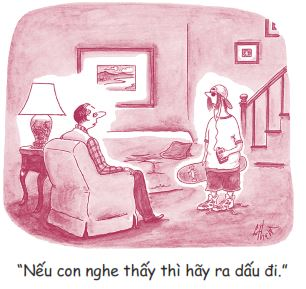
“Đây là phòng con mà mẹ. Rồi con sẽ dọn. Nhưng cho con thư thả vài phút đã. Và mẹ đừng có xông vào phòng con mà không gõ cửa nữa.”
“Đây là nhà mẹ. Nên con đừng có bảo mẹ được làm gì hay không được làm gì ngay trong chính căn nhà của mẹ.”
“Vâng, nhưng đây là phòng con và con cần được riêng tư.”
“Con sẽ không có bất cứ sự riêng tư nào cho đến khi phòng con sạch sẽ. Thế nên mau đứng dậy dọn dẹp đi.”
“Trời ạ, mẹ! Làm ơn ra khỏi phòng con đi.”
Bạn có bao giờ cảm thấy dường như bạn và cha mẹ bạn đang nói hai thứ ngôn ngữ khác nhau không? Chà, có vẻ ai cũng từng trải qua cảm giác này rồi. Bạn thấy đó, trong khi bạn lo lắng không biết lũ bạn sẽ nói gì về kiểu tóc mới của mình, cha mẹ bạn lại lo lắng làm cách nào để thanh toán hết các hóa đơn. Bạn và cha mẹ nhìn đời qua những lăng kính khác nhau. Bạn nói một đàng, cha mẹ lại nghe ra một nẻo, và ngược lại.
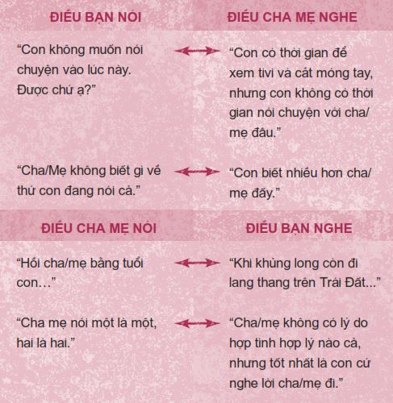
Để hiểu thêm về những gì tôi đang nói, hãy thử làm một thí nghiệm nhỏ nhé. Hãy lật sang trang 270 và quan sát hình vẽ ở trang đó. Sau đó gấp sách lại và đưa quyển sách này cho một người nào đó đang ngồi gần bạn, tốt nhất là cha hoặc mẹ bạn, rồi nhờ họ lật sang trang 289 và xem tranh ở đó. Bạn không được lén nhìn tranh của họ đâu nhé.
Giờ cả bạn lẫn người bên cạnh hãy cùng nhau lật sang trang 297 và tả lại hình ảnh mình nhìn thấy. Bạn thấy hình một phụ nữ trẻ hay là một nghệ sĩ chơi kèn saxophone? Trong trường hợp này, bạn thường sẽ nhìn thấy nghệ sĩ chơi saxophone, còn người kia sẽ thấy hình một phụ nữ trẻ. Hãy diễn giải cho nhau cho đến khi hai bạn nhìn thấy được cả hai hình. Bạn có thể xem hình ở cả hai trang 270 và 289 để hiểu cách các hình ảnh được trình bày nhằm khiến bạn nhìn thấy một trong hai hình ảnh trên.
Bạn hãy thử suy nghĩ về thí nghiệm này. Nếu một trải nghiệm vài giây ngắn ngủi như thế đã có thể khiến bạn nhìn bức ảnh khác đi, bạn có nghĩ rằng khoảng cách nhiều năm kinh nghiệm có thể khiến bạn và cha mẹ bạn nhìn thế giới theo những cách khác nhau hay không? Khi bạn giao tiếp với cha mẹ mình, có nhiều lúc họ sẽ thấy một phụ nữ trẻ còn bạn thấy một nghệ sĩ chơi saxophone và cả hai bên đều đúng. Mỗi vấn đề luôn có hai mặt. Đây được gọi là khoảng cách trong giao tiếp.
TÌM HIỂU VỀ NHAU
Tìm hiểu về nhau nhiều hơn chính là một cách tuyệt vời để thu hẹp sự cách biệt trong giao tiếp. Bạn có thể ở cùng cha hoặc mẹ hoặc cả hai trong một khoảng thời gian khá dài nhưng lại không hiểu gì nhiều về họ.
Hãy thử trả lời mười lăm câu hỏi sau đây về cha mẹ bạn. Bạn có thể đưa ra câu trả lời về một mình mẹ/một mình cha, hoặc về cả hai. Sau khi hoàn thành các câu hỏi, hãy đưa quyển sách này cho cha mẹ bạn và nhờ họ trả lời mười lăm câu hỏi về bạn ở trang 268. Sau khi mọi việc đã xong, hãy cùng ngồi lại trò chuyện về các đáp án của mỗi bên. Tôi cá là có rất nhiều việc bạn chưa biết về cha mẹ mình.
Bạn biết rõ CHA/MẸ MÌNH đến đâu?
1. Mắt cha/mẹ bạn màu gì? ______________________
2. Sở thích của cha/mẹ bạn là gì? ______________________
3 . Việc tử tế nhất bạn có thể làm cho cha/mẹ bạn trong mắt họ là gì? ______________________
4. Nếu cha/mẹ bạn không phải lo lắng về thời gian và tiền bạc, họ sẽ dành thời gian để làm gì? ______________________
5. Cha/mẹ bạn có quan điểm như thế nào về hôn nhân? ______________________
6. Ước mơ dang dở lớn nhất của cha/mẹ bạn là gì? ______________________
7. Công việc toàn thời gian đầu tiên của cha/mẹ bạn là gì? ______________________
8. Bạn thân nhất của cha/mẹ bạn là ai? ______________________
9. Cha mẹ bạn đã gặp nhau lần đầu trong hoàn cảnh nào? ______________________
10. Cha/mẹ bạn thích nhất thể loại nhạc nào? ______________________
11. Chương trình truyền hình yêu thích nhất của cha/mẹ bạn là gì? ______________________
12. Cha/mẹ bạn đã bầu cho ai trong cuộc bầu cử vừa rồi? ______________________
13. Cha/mẹ bạn sẽ đổ xăng khi xăng còn nửa bình hay đợi đến khi xe hoàn toàn hết xăng? ______________________
14. Địa điểm du lịch yêu thích nhất của cha/mẹ bạn là ở đâu? ______________________
15. Trong những hoạt động sau, cha/mẹ bạn sẽ thích hoạt động nào nhất: xem một chương trình truyền hình, đi xem phim ở rạp, đi ăn tối với vài người bạn hay đọc sách? ______________________
Bạn biết rõ CON MÌNH đến đâu?
1. Môn học con bạn yêu thích nhất là gì? ______________________
2. Điều tuyệt vời nhất bạn có thể làm cho con trong mắt chúng là gì? ______________________
3. Con bạn muốn làm nghề gì khi trưởng thành? ______________________
4. Thể loại nhạc yêu thích nhất của con bạn là gì? ______________________
5. Điều gì thật sự khiến con bạn nổi điên? ______________________
6. Mạng xã hội con bạn thích nhất là gì? ______________________
7. Nếu được thay đổi một điều duy nhất ở bản thân, con bạn sẽ chọn thay đổi điều gì? ______________________
8. Việc con bạn luôn muốn nói với bạn nhưng lại sợ chưa dám nói là gì? ______________________
9. Con bạn thích nuôi loại thú cưng nào: chó, mèo, chuột hamster, ngựa, chim, rùa, rắn, không con nào cả hay tất cả các con vừa nêu? ______________________
10. Bạn thân nhất của con bạn là ai? ______________________
11. Nếu có thể đi du lịch bất kỳ đâu trên thế giới, con bạn sẽ chọn đi đâu? ______________________
12. Trong những hoạt động sau, con bạn thích hoạt động nào nhất: đi xem phim với bạn bè, đọc một quyển sách hay, chơi game trên máy vi tính hay chơi môn thể thao yêu thích? ______________________
13. Hiện tại con bạn có bạn trai/bạn gái không? Nếu có thì đó là ai? ______________________
14. Một trong những trải nghiệm tuyệt vời của con bạn tính đến thời điểm này là gì? ______________________
15. Chuyến nghỉ mát yêu thích nhất của con bạn tính đến thời điểm này là chuyến đi nào? ______________________
Thế bạn hiểu được cha mẹ mình đến đâu và họ hiểu bạn đến đâu? Nếu cả hai bên đều trả lời đúng từ mười một câu hỏi trở lên, gia đình bạn có vẻ hiểu nhau khá rõ đấy! Nếu các bạn trả lời đúng từ sáu đến mười câu, gia đình bạn nên dành thời gian để đi chơi với nhau nhiều hơn. Nếu các bạn trả lời đúng từ năm câu trở xuống, gia đình bạn nên bắt đầu giao tiếp với nhau một cách đúng nghĩa. Nói cách khác, các bạn hãy tâm sự với nhau nhiều hơn. Việc chuyện trò có thể giúp chúng ta có thể nhìn đời qua đôi mắt của nhau và thấu hiểu nhau nhiều hơn.
TRỞ THÀNH NGƯỜI THAY ĐỔI TRƯỚC
Bạn có cảm thấy mình và cha mẹ chỉ có một kiểu trò chuyện hết lần này đến lần khác không? Hoặc bạn có thể đoán được kết quả của hầu hết các cuộc trò chuyện với cha mẹ mình?
Nếu bạn và cha mẹ bạn gặp khoảng cách trong giao tiếp, dù cách biệt ấy có rộng như Hẻm núi Lớn đi nữa, hãy cứ hy vọng nhé. Ta luôn có thể giao tiếp hiệu quả hơn chỉ cần một trong hai bên sẵn lòng thử một cách tiếp cận khác. Bạn có thể sẽ nghĩ: “Đồng ý, nhưng bác đâu biết cha cháu. Ông ấy không bao giờ chịu thay đổi đâu”. Đúng vậy, có thể cha bạn sẽ không bao giờ thay đổi, nhưng bạn thì lại có thể. Bạn có thể bắt đầu giao tiếp khéo léo hơn, thông minh hơn. Dưới đây là những kỹ năng đã được công nhận có thể giúp xây dựng một nền tảng tốt đẹp cho mọi cuộc giao tiếp.
Kỹ năng #1: Tư duy cùng thắng
Có phải bạn thường suy nghĩ theo kiểu “Mình được gì trong chuyện này”, mà ít khi nghĩ “Đối phương được gì trong chuyện này”, đúng không? Mariel đã chia sẻ: “Kể từ khi bước sang tuổi dậy thì, mình luôn gặp vấn đề trong việc giao tiếp với cha mẹ mình. Khi muốn một điều gì đó, mình sẽ nói với cha mẹ điều mình muốn và cách mình muốn mọi việc diễn ra. Mình chưa bao giờ thật sự quan tâm đến những điều cha mẹ muốn”.
Bạn cũng phải quan tâm đến những điều cha mẹ mình mong muốn nữa. Đó chính là Tư duy cùng thắng , thói quen thứ tư của các bạn trẻ thành đạt. Nghịch lý ở đây là nếu bạn quan tâm đến những gì cha mẹ mong muốn, bạn sẽ đạt được nhiều hơn những gì mình mong muốn. Trái ngược với tư duy cùng thắng là tư duy Thắng - Thua, đây là kiểu tư duy chỉ nghĩ đến bản thân mình. Lúc này, bạn xem việc trò chuyện là một cuộc tranh tài và bạn nhất định phải giành chiến thắng. Nếu bạn tư duy kiểu này, mọi việc thường diễn ra như sau.
Reggie vừa đi học về. Cậu cảm thấy hơi mệt nên đã bật tivi và ngã lăn ra sô-pha. Ngay lúc ấy, mẹ cậu hối hả bước vào phòng.
“Reggie, con yêu. Mẹ không nghĩ con có thời gian để xem tivi đâu. Mẹ thật sự đang rất cần con giúp một tay đây.”
“Con đang mệt mà mẹ. Con chỉ muốn xem tivi một chút thôi.”
“Mẹ xin lỗi, nhưng hôm nay chúng ta không có thời gian con ạ. Tối nay nhà Guercios sẽ đến chơi và mẹ cần con phụ dọn dẹp nhà cửa ngay bây giờ. Trông nhà mình như một bãi phế liệu ấy.”
“Nhà Guercios à? Sao họ cứ đến chơi suốt vậy mẹ? Con không chịu nổi họ đâu. Trời ạ.”
“Con không cần phải thích bạn bè của mẹ, nhưng mẹ muốn con ít nhất cũng tỏ ra lịch sự và chào hỏi vài câu.”
“Dạ được thôi. Nhưng con không giúp mẹ dọn nhà đâu.”
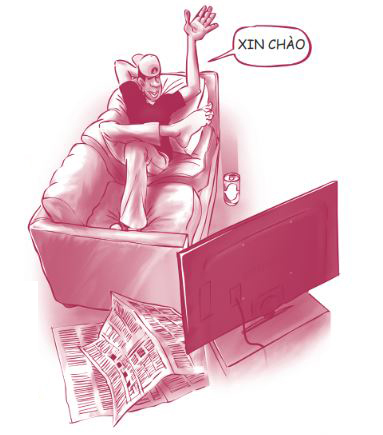
Vì chỉ nghĩ cho bản thân nên Reggie đã làm hỏng việc. Cậu giành chiến thắng và mẹ cậu chịu thua, ít nhất là trong cuộc trò chuyện này. Nhưng những vấn đề nảy sinh từ lối tư duy Thắng - Thua ấy sẽ luôn quay trở lại đợp bạn một cái vào một ngày nào đó. Hai ngày sau đó, khi Reggie muốn mượn xe ô tô, mẹ cậu ấy có thể sẽ nghĩ: “Sao mẹ phải cho con mượn xe khi hôm trước con từ chối giúp đỡ mẹ kia chứ?”.
Chỉ cần bỏ ra một chút nỗ lực và chịu tư duy cùng thắng, Reggie đã có thể hoàn toàn đảo ngược tình thế. Chúng ta hãy thử lại lần nữa xem nhé.
“Reggie, con yêu. Mẹ không nghĩ con có thời gian để xem tivi đâu. Mẹ đang rất cần con giúp một tay đây.”
“Con đang mệt mà mẹ. Con chỉ muốn xem tivi một chút thôi.”
“Mẹ xin lỗi, nhưng hôm nay chúng ta không có thời gian con ạ. Tối nay nhà Guercios sẽ đến chơi và mẹ cần con phụ dọn dẹp nhà cửa ngay bây giờ. Trông nhà mình như một bãi phế liệu ấy.”
“Dạ được rồi. Con sẽ giúp mẹ dọn nhà. Nhưng con không muốn ngồi chơi cả đêm với bạn mẹ đâu. Con chỉ chào hỏi họ cho phải phép thôi nhé.”
“Thế là tốt rồi. Cảm ơn con nhiều vì đã giúp mẹ dọn dẹp nhé. Con không tưởng tượng nổi mẹ đang bận đến mức nào đâu.”
Chỉ cần hy sinh một chút mong muốn của bản thân ở hiện tại, Reggie đã gửi một khoản tiền lớn vào Tài khoản Mối quan hệ với mẹ. Rồi cậu ấy sẽ có được nhiều hơn những gì cậu ấy muốn về sau.
Khi bạn và cha mẹ bạn bất đồng quan điểm hay khi bạn thật sự muốn thuyết phục cha mẹ nghe theo quan điểm của mình, hãy thử dùng biểu đồ chữ T. Bạn có thể hình dung trong đầu hoặc viết ra giấy. Ở một cột trong biểu đồ, hãy liệt kê những điều có lợi cho bạn. Ở cột còn lại, hãy liệt kê những điều bạn nghĩ là có lợi cho cha mẹ. Trong trường hợp của Reggie và mẹ cậu ấy, biểu đồ sẽ trông thế này:
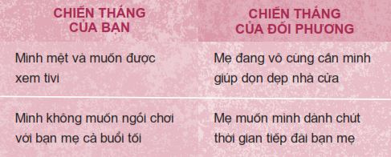
Hãy thử những câu nói thể hiện tư duy cùng thắng sau đây và chứng kiến những thay đổi nhiệm màu những câu nói này tạo ra:
• Cha/mẹ thấy chuyện này thế nào?
• Cha/mẹ muốn chuyện này được giải quyết như thế để bản thân có lợi nhất?
• Con nghĩ những việc quan trọng đối với cha/mẹ là…
• Quan điểm của cha mẹ trong chuyện này là gì?
Kỹ năng #2: Lắng nghe để được lắng nghe
Đây là thói quen thứ năm của các bạn trẻ thành đạt. Nội dung của thói quen này vô cùng đơn giản: Bạn hãy lắng nghe trước rồi mới nói ra quan điểm của mình. Khuynh hướng tự nhiên của chúng ta là thích nói trước rồi sau đó giả vờ lắng nghe.
Tyrone mười sáu tuổi và có giờ giới nghiêm vào lúc nửa đêm. Tối nay, cậu ấy định tham dự một bữa tiệc tổ chức ở hồ bơi với vài người bạn và cậu ấy muốn về trễ hơn giờ giới nghiêm. Thế là Tyrone mở lời với cha cậu.
“Cha xin lỗi, Tyrone. Nhưng chúng ta đã thỏa thuận về việc này từ trước rồi. Con biết rõ giờ giới nghiêm của con và cha muốn con về nhà trước mười hai giờ tối nay. Chấm hết.”
“Nhưng cha ơi. Cha không công bằng gì cả. Tất cả bạn bè của con đều có giờ giới nghiêm trễ hơn con. Cha mẹ các bạn để các bạn làm điều mình muốn. Steve thậm chí còn không có cả giờ giới nghiêm.”
“Cha không quan tâm bạn bè con có giờ giới nghiêm kiểu gì. Gia đình chúng ta có những luật lệ riêng.”
“Tại sao cha cứ cố kiểm soát cuộc sống của con vậy? Con ngán chuyện này lắm rồi”, Tyrone bắt đầu tỏ thái độ.
“Nếu con cứ ăn nói kiểu này, cha sẽ không cho con đi chơi khuya nữa đâu đấy.”
“Con không hiểu tại sao cha cứ làm lớn chuyện lên như thế nữa. Trời ạ, con có còn là trẻ con lên mười đâu. Con đi đây.”
Bạn hãy để ý diễn biến của câu chuyện trên. Bởi vì không chịu lắng nghe mà hai người đã không thể giao tiếp hiệu quả với nhau. Cha của Tyrone rõ ràng là một người khá nóng tính. Thế nhưng, chính vì Tyrone không chịu nỗ lực thấu hiểu cha mình nên cậu đã không thể thuyết phục ông nghe theo quan điểm mình.
Vậy bạn phải lắng nghe như thế nào? Bạn hãy hành động như một chiếc gương. Một chiếc gương sẽ làm gì? Phản chiếu. Những chiếc gương không tranh cãi hay công kích. Phản chiếu đơn giản là thế này: Hãy lặp lại những lời nói và cảm xúc của đối phương. Việc này gần giống như hành động bắt chước của chim vẹt, điểm khác nhau chính là mục đích của bạn khi phản chiếu không phải là để bắt chước đối phương mà là để thật sự thấu hiểu họ.
Ví dụ, mẹ bạn nói với bạn: “Mẹ thật sự không thích con đi chơi với Kara Johnson. Mẹ không thích những gì con bé đó làm với con. Con luôn hành xử rất hỗn xược sau mỗi lần đi chơi chung với con bé”.
Câu trả lời điển hình của bạn có thể là: “Ồ, tiếc quá. Con lại thích chơi với cậu ấy”.
Câu trả lời mang tính phản chiếu sẽ là: “Vậy mẹ nghĩ Kara có ảnh hưởng xấu đến con ạ?”.
Cha bạn nói: “Cha nghĩ việc con bỏ chơi bóng là một sai lầm lớn. Con đã chơi từ năm tám tuổi và con sẽ lãng phí hết tất cả bao nhiêu công sức”.
Câu trả lời điển hình của bạn có thể là: “Đó không phải việc của cha”.
Câu trả lời mang tính phản chiếu sẽ là: “Con biết cha đang rất lo lắng việc con bỏ chơi bóng”.
Trong lúc trò chuyện, chúng ta có khuynh hướng không để tâm lắng nghe lời đối phương nói mà chỉ lo chuẩn bị cho câu nói tiếp theo của mình. Khi bạn chân thành lắng nghe, bạn sẽ có thể nhìn ra những vấn đề nằm ẩn sâu sau những lời đối phương nói - thứ mà trước kia bạn không nhìn ra được. Việc này cũng giống như khi bạn lột vỏ hành tây vậy. Có nhiều lúc bạn sẽ phải lột bỏ vài lớp vỏ mới có thể tìm ra vấn đề thật sự.
Hãy quay trở lại với câu chuyện của Tyrone, nhưng lần này hãy giả sử như cậu ấy đang cố gắng thấu hiểu cha mình.
“Cha xin lỗi, Tyrone. Nhưng chúng ta đã thỏa thuận về việc này từ trước rồi. Con biết rõ giờ giới nghiêm của con và cha muốn con về nhà lúc mười hai giờ tối nay. Chấm hết.”
“Cha có vẻ nghiêm trọng về giờ giới nghiêm quá đấy ạ.”
“Đúng là cha có như thế thật. Bọn trẻ các con gặp quá nhiều rắc rối vào ban đêm. Mọi kiểu tai nạn đều có thể xảy ra vào thời điểm này. Con có đọc báo nên cũng biết mà. Không có gì tốt đẹp diễn ra sau nửa đêm hết. Cha chỉ muốn con được an toàn thôi.”
“Vậy thì ra cha nghiêm khắc là vì vấn đề an toàn ạ?”
“Chính xác là vậy. Cha biết con có thể nghĩ cha quá cứng nhắc, nhưng cha làm thế cũng chỉ vì muốn tốt cho con thôi. Con còn cả tương lai phía trước, con trai ạ, và cha không muốn con sa vào rắc rối. Thế thôi.”
Tyrone gật đầu và im lặng.
“Nghe này, Ty. Con cứ về đúng giờ tối nay đi đã, rồi chúng ta có thể bàn bạc thêm về việc này vào lúc khác. Có thể chúng ta sẽ lùi giờ giới nghiêm của con lại trễ hơn một chút hoặc đặt ra vài trường hợp ngoại lệ. Cha không hề muốn hủy hoại hết niềm vui của con, cha chỉ muốn con được an toàn thôi. Con hiểu ý cha chứ?”
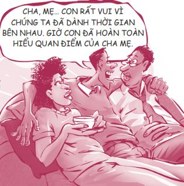
Hãy so sánh cuộc trò chuyện này với cuộc trò chuyện của Tyrone và cha cậu trước đó. Quả là một sự khác biệt to lớn! Tất cả chỉ nhờ vào vài câu trả lời mang tính phản chiếu từ Tyrone. Lần đầu tiên cha Tyrone cảm thấy được thấu hiểu. Ngoài ra, Tyrone cũng hiểu cha mình hơn. Cậu ấy nhận ra cha cậu không phải là người ngớ ngẩn mà ông chỉ đơn giản là muốn Tyrone được an toàn. Có thể hiện tại Tyrone không đạt được chính xác điều cậu ấy mong muốn, nhưng cậu ấy sắp có được giờ giới nghiêm linh hoạt hơn về sau.
Khi bạn muốn thấu hiểu ai đó, đôi khi việc tốt nhất bạn nên làm là im lặng, giống như Tyrone đã làm. Bạn không lờ đối phương đi, bạn chỉ đang hấp thu những điều họ nói và cho họ cơ hội thể hiện bản thân một cách trọn vẹn mà không bị cắt ngang.
Dưới đây là chữ “nghe” trong tiếng Trung. Chữ này được cấu thành từ chữ “tai”, chữ “mắt” và chữ “tim”. Bạn thấy đấy, “lắng nghe” không chỉ liên quan đến tai, mà việc này còn đòi hỏi ta phải dùng cả mắt và tim nữa.
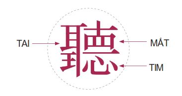
Dưới đây là vài câu nói hay giúp bạn thực hành thói quen lắng nghe để được lắng nghe:
• “Vậy ý cha/mẹ muốn nói là…”
• “Theo như con hiểu thì cha/me cảm thấy…”
• “Nếu con hiểu đúng thì cha/mẹ nghĩ rằng…”
• “Cha/mẹ. cảm thấy… về…”
Kỹ năng #3: Có tinh thần hợp tác
Bạn có thường xuyên bất đồng quan điểm với cha mẹ mình không? Bạn nhìn vấn đề theo cách này còn họ lại nhìn theo cách khác. Bạn muốn độc lập hơn, nhưng họ lại muốn kiểm soát bạn nhiều hơn. Bạn muốn dùng thẻ tín dụng, còn cha mẹ lại nghĩ bạn chưa sẵn sàng. Cứ như thể bạn và cha mẹ bạn không bao giờ có thể đi chung đường vậy.
Thế nhưng, thật ra chúng ta luôn có lựa chọn thứ ba - một giải pháp mới và tốt hơn cho cả đôi bên. Bạn chỉ cần đủ trưởng thành để bàn bạc vấn đề cho thông suốt với cha mẹ mình. Tôi gọi thái độ này là Có tinh thần hợp tác , Thói quen 6 trong 7 Thói quen.
Tôi có biết một bạn trẻ tên Nikki. Em rất muốn nuôi một chú chó nhưng mẹ em lại không thể chịu nổi việc có một con chó trong nhà. Bà bị ám ảnh về vi trùng và không thể chấp nhận việc giữ trong nhà một con vật có khả năng lan truyền bệnh tật. Bà thường hỏi Nikki: “Con cần chó hơn hay cần mẹ hơn?”.
Hai mẹ con đã cãi nhau về việc này suốt nhiều tháng.
“Sao mẹ không cho con nuôi chó? Tất cả bạn bè của con đều được nuôi chó và cha mẹ các bạn thậm chí không thèm để tâm. Có gì to tát đâu mẹ?”, Nikki mè nheo.
Những lúc như thế, mẹ cô bé sẽ cương quyết: “Nhà chúng ta sẽ không bao giờ nuôi chó. Nuôi thú cưng cũng giống như phải chăm sóc thêm một đứa trẻ vậy. Cuối cùng mẹ cũng lại là người phải làm hết cho xem. Chúng ta không nuôi chó. Chấm hết”.
Cuối cùng, khi nhận thấy tình hình không có chút triển vọng nào, Nikki đã thức khuya một đêm để viết một bản đề nghị gửi đến mẹ. Cô bé suy nghĩ thật kỹ về những nỗi lo của mẹ và đã liệt kê tất cả những việc em hứa sẽ làm để mẹ không phải lo lắng nữa, nếu mẹ đồng ý cho em nuôi chó. Sáng hôm sau, em đặt lá thư trên gối của mẹ.
Khi đọc bức thư, mẹ của Nikki đã ngạc nhiên đến nỗi bà đã thật sự mở lòng và bắt đầu cân nhắc việc nuôi một chú chó. Sau đó, Nikki và mẹ đã dành vài tuần lễ để cùng nhau tìm hiểu thông tin về các chú chó trên Internet.
Vào sinh nhật lần thứ mười bốn của Nikki, một người nuôi chó từ một bang khác xuất hiện trước cửa nhà Nikki với một chú chó Malta màu trắng nhỏ xinh. Chú chó chính là cục bông di động đáng yêu nhất mà Nikki từng được thấy.
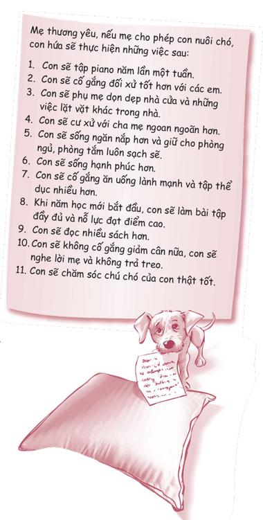
Khi bạn và cha mẹ bạn bất đồng quan điểm về một vấn đề nào đó, thay vì cãi vã, hãy chọn cách giải quyết vấn đề một cách trưởng thành và hợp tác với nhau. Hãy thảo luận thông suốt mọi chuyện. Hãy cố gắng tìm ra một giải pháp phù hợp với cả đôi bên. Ta sẽ luôn tìm ra những lựa chọn tốt nếu ta chịu trò chuyện thẳng thắn và cởi mở. Dưới đây là quy trình năm bước đơn giản giúp bạn thực hành kỹ năng hợp tác.
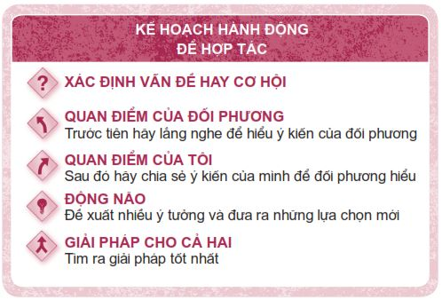
Bạn thấy đấy, tư duy cùng thắng và lắng nghe để được lắng nghe cũng đã được vận dụng để xây dựng nên kế hoạch hành động này. Cùng với tinh thần hợp tác , ba kỹ năng này phối hợp chặt chẽ với nhau.
Giả sử bạn và mẹ đang có mâu thuẫn về việc học hành của bạn. Mẹ cứ luôn nhắc nhở bạn phải làm bài tập và cố gắng đạt điểm cao hơn. Ngược lại, bạn đang vô cùng mệt mỏi với những lời cằn nhằn không ngớt của mẹ. Hầu hết các cuộc trò chuyện giữa hai mẹ con đều tương tự như thế này:
“Con yêu, mẹ nghĩ tốt hơn con nên tắt tivi và bắt đầu làm bài tập về nhà của con đi.”
“Thư thả chút đi mẹ. Con sẽ làm sau. Con hứa mà.”
“Không sao trăng gì hết. Con làm ngay bây giờ đi.”
“Con sẽ biết ơn lắm nếu mẹ chịu tha cho con. Mẹ không thấy là mấy lời cằn nhằn của mẹ không mang lại ích lợi gì hết sao?”
“Mẹ đâu cần phải nói về bài tập của con nếu con thật sự làm bài. Nhưng con lại không chịu làm. Con dường như còn không thèm quan tâm đến việc học của mình.”
“Vâng, con biết rồi. Con là một đứa tệ hại thế đó. Giờ mẹ để con yên đi.”
Đây là kiểu trò chuyện khá điển hình. Những cuộc đối thoại thế này thể hiện sự lười biếng. Ta chọn đấu đá và tranh cãi đơn giản vì ta lười biếng. May mắn thay, bạn vừa được biết về “Kế hoạch hành động để hợp tác” và bạn khá là hào hứng muốn thực hành thử. Nếu chuyện đã đến nước này, chúng ta còn gì để mất đâu chứ?
Thế nên, một tối nọ, khi mẹ bạn đang trong tâm trạng vui vẻ, bạn liền đến bắt chuyện với mẹ.
Xác định vấn đề hay cơ hội
“Mẹ ơi, con nói với mẹ chuyện này được không?”
“Được chứ, con yêu. Có việc gì nào?”
“À, con chỉ muốn nói về chuyện học hành của con. Con quá ngán ngẩm việc chúng ta cứ cãi nhau suốt vì chuyện này.”
“Đúng rồi, mẹ cũng vậy.”
Quan điểm của đối phương (Trước tiên hãy lắng nghe để hiểu ý kiến của đối phương)
“Mẹ có thể giải thích cho con hiểu tại sao lúc nào mẹ cũng chê trách con không ạ? Ý con là mẹ nhìn nhận thế nào về mọi việc vậy mẹ?”
“Mẹ xin lỗi nếu việc mẹ hay nhắc nhở khiến con cảm thấy như mẹ đang làm phiền con. Mẹ không cố tình làm vậy. Mẹ chỉ quá lo lắng về điểm số của con. Con có thể đạt được điểm cao hơn nhiều chỉ cần con chịu cố gắng thêm chút nữa thôi.”
“Mẹ nghĩ con chưa cố gắng hết sức sao ạ?”
“Đúng thế, mẹ nghĩ con chưa thật sự chú tâm. Đôi khi mẹ cảm thấy dường như con không hề quan tâm đến chuyện học hành. Mẹ sợ rằng nếu mẹ không liên tục nhắc nhở con làm bài tập về nhà, con sẽ không làm gì cả. Việc được nhận vào một trường đại học tốt thật sự rất quan trọng và con chỉ có thể làm được nếu có điểm số cao.”
“Vậy là mẹ cảm thấy con không thật sự quan tâm nhiều đến chuyện học hành và việc con được nhận vào một trường đại học tốt là rất quan trọng với mẹ. Con tóm tắt lại như thế có đúng ý mẹ không ạ?”
“Ừ, đó đúng là cách mẹ nhìn nhận vấn đề.”
Quan điểm của bạn (Chia sẻ ý kiến của mình để đối phương hiểu)
“Con chia sẻ với mẹ về cảm giác của con được không ạ?”
“Tất nhiên là được rồi. Mẹ cũng muốn nghe con chia sẻ mà.”
“Con thật sự có quan tâm đến chuyện học hành mẹ ạ. Có thể không nhiều như mẹ quan tâm, nhưng con có quan tâm đến việc học của mình. Và con chỉ thích làm bài tập về nhà theo lộ trình của riêng con chứ không phải những lúc mẹ bảo con phải làm. Thế nên, con thật sự thấy mệt mỏi khi cứ mẹ la rầy con về chuyện đó suốt.”
“Ý con là sao?”
“Ý con muốn nói việc mẹ liên tục cằn nhằn về bài tập ở nhà của con không hề tạo động lực cho con, mà là ngược lại. Những lời cằn nhằn khiến con không muốn làm bài và khiến con cảm thấy mình là một kẻ thất bại, cứ như mẹ đang nghĩ rằng con không có khả năng tự làm được việc gì cả.”
“Thật thế à?”
“Dạ đúng, con nghĩ con sẽ học tốt hơn nhiều nếu mẹ thôi hối thúc con học hành và chỉ ở bên cạnh khi con cần sự giúp đỡ.”
Động não (Đề xuất nhiều ý tưởng và đưa ra những lựa chọn mới)
“Vậy con nghĩ chúng ta nên làm gì?”
“Đầu tiên, con sẽ rất biết ơn nếu mẹ không liên tục cằn nhằn con nữa.”
“Mẹ cũng không thích cằn nhằn đâu con yêu. Nhưng đó có vẻ là cách duy nhất mẹ có thể làm để con chịu làm bài tập về nhà.”
“Vậy con phải làm gì thì mẹ mới không cằn nhằn nữa?”
“À, mẹ cần con chứng minh cho mẹ thấy là con luôn chủ động hoàn thành nhiệm vụ. Chỉ thế thôi.”
“Mẹ ơi, mẹ có biết mẹ có thể kiểm tra điểm số và bài tập trong bất cứ lớp học nào của con trên trang web của trường không?”
“Không, mẹ không biết chuyện đó.”
“Vâng, mẹ có thể xem mọi thứ chỉ cần con cho mẹ mật khẩu của con. Vậy giờ chúng ta thử theo cách này nhé. Mẹ có thể lên trang web của trường kiểm tra kết quả học tập của con bất cứ khi nào mẹ muốn. Nếu con không nộp bài đúng hạn hoặc đạt điểm kém, mẹ có thể cằn nhằn bao nhiêu cũng được. Nhưng nếu con làm tốt mọi việc, mẹ phải để con yên nhé.”
Giải pháp cho cả hai (Tìm ra giải pháp tốt nhất)
“Vậy cũng ổn. Nhưng con phải chỉ mẹ cách vào trang web đó.”
“Không thành vấn đề ạ. Vậy mẹ nghĩ sao? Ý kiến này nghe hay đúng không mẹ? Vậy chúng ta thỏa thuận vậy nhé?”
“Mẹ thấy cũng khá ổn, con yêu.”
Mọi chuyện không phải lúc nào cũng dễ dàng như vậy trong thực tế. Nhưng nhìn chung thì mọi việc sẽ diễn ra suôn sẻ nếu cả hai cùng thật sự lắng nghe nhau và bàn về giải pháp. Bạn sẽ luôn tìm ra giải pháp cho những bất đồng nếu bạn nói chuyện rõ ràng với cha mẹ. Những cuộc nói chuyện như thế đòi hỏi sự kiên nhẫn và nỗ lực nhưng lại thật sự rất hiệu quả. Tóm lại, ba kỹ năng để xóa bỏ khoảng cách trong giao tiếp chính là:
• Tư duy cùng thắng: Hãy luôn nghĩ và làm những việc không chỉ có lợi cho bản thân mà còn có lợi cho cha mẹ bạn nữa.
• Lắng nghe để được lắng nghe: Hãy dành thời gian lắng nghe để thấu hiểu quan điểm của cha mẹ bạn trước khi bắt đầu trình bày quan điểm của mình. Hãy lặp lại bằng từ ngữ của mình những lời nói và cảm xúc của cha mẹ.
• Có tinh thần hợp tác: Hãy cùng nói chuyện để cả hai cùng thông suốt những điểm khác biệt giữa hai bên. Trước tiên, hãy cố gắng hiểu quan điểm của cha mẹ. Sau đó, hãy chia sẻ quan điểm của mình. Cuối cùng hãy tìm tất cả những lựa chọn khả dĩ và chọn ra cái tốt nhất. Chỉ đơn giản thế thôi.
Sau khi được trang bị những kỹ năng này, bạn đã có thể tự xem mình là một nhà ngoại giao đáng gờm rồi đấy.
CHẶN ĐỨNG NGUY CƠ CHIẾN TRANH CHỈ BẰNG MỘT CÂU NÓI
Có nhiều lúc, cha mẹ sẽ nói những câu chạm ngay tử huyệt khiến bạn phát điên lên, chẳng hạn như: “Cha/mẹ đã quyết rồi, không có lý do gì cả” hay “Hoặc là con nghe lời cha/mẹ hoặc…”. Những lúc này, nước đi tệ nhất của bạn chính là cãi lại và châm ngòi cuộc chiến giữa hai bên. Bạn sẽ không bao giờ thắng cha mẹ mình. Thay vì thách thức, bạn hãy thử chặn đứng nguy cơ chiến tranh bằng một trong ba cách sau.
1. Nói xin lỗi.
2. Cố gắng không nói gì cả.
3. Lắng nghe để thấu hiểu bằng cách lặp lại bằng từ ngữ của chính bạn những lời nói và cảm nhận của cha mẹ.
Khi bạn từ chối cầm gươm lên, cha mẹ sẽ bỏ gươm của họ xuống. Bạn thường có thể chặn đứng nguy cơ chiến tranh chỉ bằng một câu nói đúng chỗ. Hãy tham khảo những tình huống sau:
Cảnh 1: Bạn và mẹ bạn đang cãi nhau về cách ăn mặc của bạn. Cuộc trò chuyện bắt đầu căng thẳng khi bạn tỏ thái độ bực mình với mẹ.
Mẹ bạn nói: “Mẹ không thể tin nổi con có thể nói những lời như thế. Mẹ là mẹ của con. Sao con dám nói chuyện với mẹ kiểu đó?”.
Lúc này, nếu bạn muốn châm ngòi nổ, bạn có thể nói: “Con sẽ nói chuyện với mẹ theo bất cứ kiểu nào con muốn”.
Nhưng nếu bạn khôn ngoan và muốn ngăn chặn một cuộc cãi vã, bạn sẽ nói: “Xin lỗi mẹ. Đáng ra con không nên nói như thế”.
Cảnh 2: Bạn phàn nàn với cha về việc cha thật không công bằng khi bắt bạn làm hết những việc nặng trong nhà, trong khi em gái của bạn toàn được làm việc nhẹ.
Cha bạn thở dài ngao ngán: “Cha đã giải thích việc này rồi. Cha không muốn nghe con nói thêm lời nào nữa, một lời cũng không. Cha nói nghiêm túc đấy. Con hiểu không?”.
Nếu bạn muốn khơi mào Chiến tranh Thế giới thứ III, bạn cứ tiếp tục nói.
Còn nếu bạn muốn ngăn chặn một cuộc chiến, hãy thử giữ im lặng xem sao nhé.
Cảnh 3: Bạn và cha đang nói chuyện về anh chàng bạn hẹn hò gần đây. Cha bạn không thích anh chàng này chút nào.
Cha bạn nói: “Con yêu, cha cảm thấy anh chàng đó có gì đó không ổn. Cha thật sự nghĩ con không nên đi chơi với anh ta. Cha có linh cảm rất mạnh mẽ về chuyện này”.
“Đó có phải chuyện của cha đâu” có lẽ là câu nói đầu tiên xuất hiện trong đầu bạn và câu nói đó có thể khiến cha bạn sôi máu lên.
Tuy nhiên, bạn cũng có thể chặn đứng nguy cơ cãi nhau rồi tiếp tục cuộc trò chuyện bằng cách thể hiện sự thấu hiểu. Hãy nói với cha: “Cha, con biết cha thật sự rất lo lắng về việc con hẹn hò với anh ấy”.
HAI SAI LẦM KINH ĐIỂN
Các bạn trẻ thường mắc phải hai sai lầm kinh điển - hai việc có thể khiến cha mẹ phật ý và hủy hoại lòng tin của họ. Hãy tránh phạm phải hai sai lầm này. Việc này rất không đáng. Bạn có thể sẽ cảm thấy hả dạ nếu “hạ gục” được họ, nhưng rồi bạn sẽ phải trả giá về sau. Hai sai lầm đó chính là ăn thua đủ và nói với cha mẹ rằng bạn ghét họ .
Ăn thua đủ
Marshall đang sắp trễ giờ làm, cậu là nhân viên đóng gói tại một cửa hàng bách hóa. Ngay lúc ấy, mẹ cậu bước ra từ căn phòng bừa bộn của cậu, mắt bà như nảy lửa.
“Marshall, đi xuống và dọn sạch phòng con ngay đi. Mẹ không nhắc lại lần nữa đâu nhé.”
“Thôi mà mẹ, phòng con sạch mà.”
“Sạch ư? Con gọi đó là sạch à? Quần áo của con vương vãi khắp sàn nhà. Giường ngủ thì bừa bộn. Chỗ nào trong phòng con cũng có rác. Mẹ không thể tin nổi mẹ đang nuôi một đứa ở bẩn như thế.”
“Mẹ ơi, con sắp trễ giờ làm rồi. Con sẽ dọn khi con đi làm về. Con hứa đấy.”
“Không, mẹ biết con sẽ không làm. Con phải dọn phòng xong rồi muốn đi đâu thì đi.”
“Mẹ đùa con à? Con không thể tin được.”
“Con nên tin đi bởi vì mẹ đang rất nghiêm túc đấy.”
Marshall lao xuống cầu thang để vào phòng cậu ấy. Khi đi ngang qua chỗ mẹ, cậu gầm gừ trong cổ họng: “Đồ ngớ ngẩn!”.
“Con vừa mới gọi mẹ là gì đấy?”
Marshall vừa cố ăn thua đủ với mẹ cậu. Cậu đã không thể kiềm chế được bản thân và khi làm vậy, cậu vừa khơi mào một cuộc chiến hạt nhân. Bạn thấy đó, các bậc phụ huynh có đôi tai rất siêu phàm, họ có thể nghe thấy tất cả những lời xấu xa mà bạn lầm bầm trong cổ họng, chẳng hạn như: “Đồ ngớ ngẩn”, “Đồ ngốc”, “Mẹ đi lạc đề xa quá rồi”, “Cha chẳng biết gì cả” và một vài từ khác mà tôi không tiện nêu ra. Sau khi cuộc trò chuyện đã ngã ngũ, hãy kiềm lòng, đừng cố ăn thua đủ. Bạn chỉ đang tự tạo thêm rắc rối cho mình thôi. Hãy lựa chọn chiến thuật khôn ngoan nhé.
Con ghét cha/mẹ
Jatina cùng gia đình đang chuẩn bị đến nhà ông bà ngoại ăn tối vào tối Chủ nhật. Jatina và mẹ kế của cô bé thỉnh thoảng lại cãi nhau về cách ăn mặc của Jatina. Jatina thấy việc em mặc như thế nào không liên quan gì đến mẹ kế của em cả.
“Ôi không. Con không thể mặc cái đó đến nhà ông bà. Trông chẳng đoan trang chút nào cả.”
“Thoải mái chút đi mẹ. Bộ đồ này có gì không ổn đâu chứ?”
“Con nhìn đi. Chiếc áo hở hang quá chừng.”
“Nhưng con không còn món gì khác để mặc hết.”
“Ôi, thôi nào. Gần đây mẹ đã dẫn con đi mua sắm rất nhiều lần mà? Con có rất nhiều đồ đẹp đấy chứ. Thế còn bộ đồ màu xanh lá dễ thương cha mẹ mới mua cho con thì sao?”
“Í ẹ, bộ đó xấu òm. Mà từ khi nào mẹ lại trở thành cố vấn thời trang của con vậy? Con sẽ mặc những thứ con muốn.”
“Nhưng không phải trước mặt ông bà con. Giờ hoặc con đi thay đồ khác hoặc con sẽ ở nhà cuối tuần này. Tùy con đấy.”
“Ôi trời, mẹ. Mẹ thật là kỳ cục. Con ghét mẹ!”
“Con ghét mẹ/cha” chỉ là câu nói chúng ta tiện miệng ném vào cha mẹ mình khi chúng ta nổi giận hoặc thất vọng mà không biết phải làm gì. Tôi nghĩ chúng ta không thật sự có ý như vậy trong phần lớn các trường hợp. Tôi nhớ có vài lần tôi cũng nói với mẹ mình là tôi ghét bà khi tôi quá bực mình. Có lúc mẹ lờ đi, nhưng cũng có nhiều lúc tôi có thể cảm nhận sự tổn thương của mẹ và tôi đã hết sức hối hận vì đã nói ra những lời đó.
Khi bạn nổi giận với cha mẹ mình, tốt hơn hết bạn hãy kìm nén cơn giận, giữ im lặng hoặc la ARRGH! như một tên cướp biển.
CÁCH THÔNG BÁO TIN XẤU CHO CHA MẸ
Một người mẹ bước vào phòng ngủ của cô con gái và nhìn thấy một lá thư được đặt trên giường. Linh cảm xấu chợt dâng lên trong lồng ngực bà, rồi bà bắt đầu đọc lá thư với đôi tay run rẩy.
Mẹ yêu dấu của con,
Con hết sức vui mừng thông báo với mẹ là con đã bỏ trốn cùng anh bạn trai mới của con rồi. Con đã tìm thấy tình yêu đích thực. Anh ấy là một người đàn ông hết sức tuyệt vời, anh sưu tầm rất nhiều loại khuyên tai, có nhiều hình xăm và một chiếc mô tô thật to. Nhưng đó chưa phải là tất cả đâu mẹ ạ, con đã mang thai và Biff nói rằng bọn con sẽ cực kỳ hạnh phúc khi sống trong căn nhà di động của anh ấy trong rừng. Anh ấy muốn con sinh thêm nhiều đứa trẻ nữa và đó cũng là một trong những ước mơ của con. Con cũng đã nhận ra cần sa không có chút tác hại nào. Bọn con đang trồng cần sa để tự sử dụng và cung cấp cho các bạn của anh ấy, đổi lại bọn họ sẽ giúp bọn con mua heroin.
Mẹ đừng lo lắng cho con nhé. Con đã mười sáu tuổi rồi và con biết tự chăm sóc bản thân. Một ngày nào đó con sẽ về thăm mẹ để mẹ được biết mặt các cháu.
Con gái của mẹ,
Judy
Tái bút: Mẹ ơi, mọi chuyện không phải thật đâu ạ. Con đang ở nhà hàng xóm và con chỉ muốn mẹ biết rằng cuộc sống còn có những thứ tồi tệ hơn cả quyển sổ liên lạc con đang để trong ngăn tủ. Con yêu mẹ!
Một trong những việc khó khăn nhất khi giao tiếp với cha mẹ chính là khi bạn phải thông báo tin xấu cho họ. Vì vậy, nếu bạn vừa làm hỏng xe ô tô của gia đình, phương pháp như trên có thể có hiệu quả với bạn. Cách này giúp mọi người thấy vấn đề có vẻ bớt trầm trọng.
Khi bạn trở thành điểm tựa cho cha mẹ
Hầu hết các bậc cha mẹ đều cố gắng hết sức mang lại cho con mình những điều tốt đẹp nhất có thể. Dù bản thân còn nhiều khuyết điểm, họ vẫn luôn yêu thương và mong muốn dành những gì tốt đẹp nhất cho bạn. Nhưng một số bạn trẻ lại không được may mắn như vậy, cha mẹ những bạn trẻ này gặp phải những rắc rối nghiêm trọng. Một số bạn trẻ bị cha mẹ bỏ bê, những bạn khác lại có cha mẹ nghiện ma túy, nghiện rượu, có nhiều mối quan hệ ngoài luồng hay bạo hành các bạn ấy về thể chất lẫn tinh thần. Có thể những bậc cha mẹ ấy vẫn yêu thương con cái mình, nhưng họ đã không thể kiểm soát cuộc sống của mình. Chứng nghiện ngập và những thói quen xấu mạnh mẽ hơn tình yêu thương họ dành cho con mình.
Tôi không bao giờ quên được lá thư tôi nhận được từ một bạn trẻ người Việt tên Trinn.
Bác Sean thân mến,
Cháu mười một tuổi và đang học lớp Sáu. Cháu đang gặp rắc rối. Cha cháu nghiện ma túy còn mẹ cháu thì gần như không bao giờ ở nhà và mẹ đã phản bội cha cháu. Cháu ước gì mình có thể chỉnh đốn gia đình mình. Bác có thể cho cháu vài lời khuyên cháu nên làm gì không ạ?
Tôi không chắc mình nên trả lời em như thế nào. Cuối cùng, tôi cũng trả lời thư em và nói với em rằng em chỉ có thể đưa ra những lựa chọn cho chính mình mà thôi, chứ không thể chọn thay cho cha mẹ em được, tôi cũng khuyên em hãy cố gắng làm tốt nhất những gì có thể. Nếu bạn đang ở trong hoàn cảnh tương tự như Trinn, dưới đây là vài biện pháp bạn có thể cân nhắc:
TÌM SỰ GIÚP ĐỠ
Nếu cha mẹ bạn nghiện ma túy hay nghiện rượu, rõ ràng họ cần sự giúp đỡ, chẳng hạn như gặp một bác sĩ trị liệu hoặc tham gia một chương trình cai nghiện. Một trong những dấu hiệu của chứng nghiện ngập chính là sự phủ nhận. Những con nghiện sẽ không thừa nhận mình đang gặp vấn đề và không muốn được người khác giúp đỡ. Hãy thử nói chuyện với ông bà, cô chú hay một người lớn là bạn của gia đình bạn. Hoặc bạn cũng có thể nói chuyện với giáo viên cố vấn ở trường hay một giáo viên bạn tin tưởng. Hãy nói với họ những việc đang diễn ra và thử nhờ họ giúp đỡ.
Nếu bạn đang bị đánh đập hay quấy rối tình dục ngay trong nhà của mình, bạn phải tìm sự giúp đỡ ngay lập tức. Không ai đáng phải chịu đựng một cuộc sống như thế. Hãy liên hệ với một người bà con hoặc bất kỳ ai bạn có thể tin tưởng và trình bày với họ những việc đang diễn ra. Bạn rất có thể cần phải rời khỏi nhà hoặc báo cảnh sát ngay lập tức. Có nhiều chuyên gia am hiểu về những tình huống này và có thể giúp bạn thấu suốt được tình thế của mình, đồng thời đề xuất cho bạn một số lựa chọn và giải pháp thích hợp. Bạn có thể tìm được những chuyên gia như thế thông qua giáo viên cố vấn hay những người lớn bạn tin tưởng.
TÌNH YÊU VÀ SỰ THA THỨ
Nếu cha mẹ bạn hoàn toàn không thể kiểm soát đời họ, bạn sẽ không muốn đi theo vết xe đổ của họ. Tuy nhiên, bạn vẫn có thể yêu thương và tha thứ cho họ, dù việc đó quả thật vô cùng khó khăn. Trường hợp của một cô bé lên Liz Murray sẽ giúp bạn hình dung rõ hơn về điều này. Tôi đã nghe cô bé chia sẻ về chuyện đời mình và vô cùng xúc động trước tình yêu thương sâu sắc em dành cho cha mẹ mình dù họ hoàn toàn vô trách nhiệm với em và em gái em.
Liz và em gái của em sống cùng cha mẹ ở Bronx, Thành phố New York. Cha và mẹ em đều nghiện ma túy. Liz nhớ rất rõ rất nhiều lần mẹ em được những người xa lạ tốt bụng đưa từ quán bar về nhà trong tình trạng say khướt; máu và chất nôn mửa dính đầy bộ quần áo tả tơi của bà. Cô bé phải tắm cho mẹ và dìu bà lên giường. Căn hộ của gia đình em lúc nào cũng trong tình trạng bốc mùi, bẩn thỉu và rất hiếm khi trong nhà có thức ăn bởi vì cha mẹ em thường dành hết số tiền trợ cấp để mua ma túy.
“Ngày đầu tháng thường vui như ngày hội và người đưa thư cứ như ông già Noel vậy”, Liz kể. Bạn biết đấy, đó là khi tờ chi phiếu trợ cấp xã hội được gửi đến. Cả gia đình sẽ cùng nhau đi đổi tờ chi phiếu ra tiền mặt. Liz và em gái sẽ được tận hưởng Bữa ăn Hạnh phúc của hai chị em. Sau bữa ăn, hai cô bé sẽ đứng chờ bên ngoài một tòa nhà trong khi cha mẹ các em vào trong để mua ma túy.
Đáng buồn thay, cuộc sống vốn đã hỗn độn của em lại càng bi kịch hơn khi mẹ em bị chẩn đoán mắc HIV. Các thành viên trong gia đình em phải tách nhau ra. Khi đó, Liz đang ở tuổi vị thành niên và em đã được gửi đến một mái ấm xã hội. Sau nhiều trải nghiệm không mấy vui vẻ ở nơi đó, năm lên mười lăm tuổi, Liz đã thu dọn đồ đạc và bỏ ra ngoài sống. Em thỉnh thoảng ngủ nhờ ở nhà bạn bè, nhưng hầu hết thời gian, em ngủ trên các băng ghế công viên; vào những hôm trời lạnh, em sẽ ngủ ở ga tàu điện ngầm. Có những lúc, cách vài tuần em mới có thể tắm rửa một lần.
Liz đã chăm sóc người mẹ sa đọa của em cho đến khi bà qua đời vì bệnh AIDS. Năm đó, Liz mười sáu tuổi và cái chết của mẹ chính là hồi chuông thức tỉnh em. Liz kể: “Em đã tận mắt nhìn thấy những con người tự tay hủy hoại cuộc đời mình xung quanh em. Nếu em không chịu trách nhiệm cho đời mình, em sẽ trở thành một trong số họ… Em không có gì trong tay cả và bắt đầu thấy sợ hãi. Chính vì sợ hãi mà em đã quay trở lại trường học”.
Bất chấp hoàn cảnh vô gia cư của mình, Liz đã dồn hết tâm sức cho việc học. Em đăng ký các lớp ban ngày, lớp ban đêm và các lớp thứ Bảy. Em học ở mọi nơi - ở các dãy hành lang, dưới gầm cầu thang, ở ga tàu điện ngầm, v.v. Sau hai năm, em đã tốt nghiệp trung học.
Sau đó, Liz nộp đơn xin tham gia một chương trình cấp học bổng đại học do tờ New York Times tài trợ. Ban xét đơn đã cảm thấy hết sức ấn tượng trước câu chuyện đời phi thường của em. Liz được trao một trong sáu phần học bổng và được nhận vào Đại học Harvard. Ngay sau đó, em bắt đầu viết một quyển sách kể về những trải nghiệm của mình. Quyển sách có tựa đề Breaking Night (tạm dịch: Phá vỡ bóng đêm ). Em cũng hỗ trợ đạo diễn bộ phim chiếu trên Lifetime Television mang tên Homeless to Harvard (tạm dịch: Từ vô gia cư đến Harvard ). Giờ đây, Liz đã trở thành một bà mẹ hai con và cô vẫn đang theo học bằng thạc sĩ tâm lý học tại Đại học Columbia.
Đối với tôi, điều đáng kinh ngạc nhất trong câu chuyện này chính là cách Liz đối xử với cha mẹ em trong suốt hành trình khắc nghiệt kia. Em hoàn toàn có quyền ghét họ, nhưng thay vì ghét bỏ, em đã thể hiện tình yêu thương. “Tình yêu thương chính là câu trả lời”, Liz đã trả lời như thế khi được hỏi tại sao giờ em lại chăm sóc cha mình sau khi ông đã bỏ bê em suốt nhiều năm.
“Em không giận cha mẹ. Họ có quan tâm đến em nên em yêu thương họ. Cha mẹ đã nghiện ma túy từ trước khi bọn em được sinh ra đời và họ vốn không nên sinh con. Dù vậy, em vẫn thấy biết ơn họ. Họ đã dạy em nhiều điều: Họ chỉ cho em thấy đâu là con đường em nên tránh. Và thật ra em cũng có những ký ức đẹp. Em còn nhớ cảnh mẹ em vào phòng và ru em ngủ. Em còn nhớ cả những lời ru của bà. Nếu hôm nay em có thể nói một điều với mẹ, em sẽ nói: ‘Mẹ đừng lo lắng về con nữa nhé. Con sẽ ổn. Cảm ơn mẹ vì tất cả. Con yêu mẹ’”.
PHÁ VỠ VÒNG LẨN QUẨN
Cuộc sống vốn không công bằng. Tại sao lại có những đứa trẻ lớn lên trong những gia đình đầm ấm, nơi chúng được yêu thương và thấy mình quan trọng, trong khi những đứa trẻ khác phải lớn lên trong những gia đình tồi tệ, nơi chúng bị ngược đãi và thấy mình vô giá trị? Nếu bạn rơi vào trường hợp sau, bạn có thể sẽ thắc mắc: “Tôi đã làm gì để đáng phải bị như vậy?”. Thật ra bạn không hề làm gì để đáng phải bị như vậy cả. Đó không phải lỗi của bạn.
Bạn có thể làm một số việc để cải thiện tình hình. Bằng cách nào ư? Bằng cách phá vỡ vòng lẩn quẩn đó. Nếu ông bà bạn không kiểm soát được cuộc đời họ, cha mẹ bạn cũng không kiểm soát được cuộc đời họ, bạn vẫn có thể phá vỡ cái vòng lẩn quẩn này bằng cách đừng đi vào vết xe đổ của các thế hệ trước và bắt đầu hình thành những thói quen tốt để có thể truyền những thói quen này lại cho con cháu mình một ngày nào đó.
Bạn có thể đang phải sống trong một gia đình lúc nào cũng chìm đắm trong ma túy, bạo lực, ngược đãi, quấy rối hay tình trạng bỏ bê con cái. Tình trạng này có thể đã kéo dài suốt nhiều thế hệ. Nhưng bạn có thể ngăn không cho nỗi bất hạnh này tiếp diễn đến đời con cháu của mình. Bạn có thể vươn lên từ tuổi thơ khốn khổ của mình. Có lẽ đây chính là lý do bạn được sinh vào gia đình này - chính là để chữa lành căn bệnh kinh niên của cả nhà, để thanh lọc những thói hư tật xấu, để trở thành một con người đứng đắn và là tấm gương cho những người khác noi theo. Nếu bạn bị ngược đãi, hãy dịu dàng bày tỏ tình yêu với con cái mình. Nếu bạn bị bỏ bê, hãy quan tâm sâu sắc đến con cái mình. Nếu bạn lớn lên trong một gia đình hay cãi vã, bạn có thể tự mình xây đắp một gia đình hòa thuận, ấm êm. Bạn có thể bắt đầu thay đổi mọi thứ để tạo nên những thói quen tốt đẹp cho thế hệ tiếp theo của gia đình mình.
Jesse lớn lên trong một gia đình rất bạo lực, nhưng giờ anh đã trở thành người tiên phong phá vỡ vòng lẩn quẩn này.
Khi mình còn nhỏ, mẹ mình nghiện rượu. Mẹ thường bỏ mình lại trong xe những lúc bà say bí tỉ trong nhà. Mình ý thức rất rõ việc cha mẹ mình luôn phải dùng đến bạo lực để giải quyết vấn đề. Mình còn nhớ rõ cảnh mẹ mình từng quỵ xuống vì bị cha đấm vào bụng bằng tất cả sức lực của ông. Mình cảm thấy bất lực và chỉ có thể khóc. Mình còn nhớ mẹ cũng khóc và van xin cha: “ Làm ơn đừng để Jesse chứng kiến cảnh này”.
Lúc mình vẫn còn rất nhỏ, cha mẹ mình đã ly hôn. Bởi vì mẹ luôn say xỉn, cha đã giành được quyền nuôi mình, hay như cách ông nói - “sở hữu” mình. Cha đã đánh mình liên tục suốt những năm sau đó.
Vào mùa hè cuối cùng mình còn ở nhà cha, ông đã ép mình phải lao động nặng. Mình phải xúc đất, khiêng đá, khiêng gỗ suốt mười sáu tiếng một ngày. Một hôm nọ, mình đã ném cái xẻng xuống đất và nói với ông mình cần nghỉ giải lao. Ông đấm mình ngã xuống đất, ghì mình xuống và bắt đầu đánh mình không thương tiếc. Tối hôm đó mình đã gọi điện cầu cứu cảnh sát.
Năm mình mười sáu tuổi, mình đã kiện cha ra tòa để có thể dọn về ở chung với mẹ. Mẹ mình rõ ràng vẫn còn nghiện rượu, nhưng bà đã giấu chuyện đó để giành được quyền nuôi mình. Mẹ có cố gắng giữ cho bản thân tỉnh táo, nhưng nỗ lực cai nghiện của mẹ không bao giờ kéo dài quá sáu tháng. Những lúc say, mẹ chỉ nằm bẹp trên giường suốt nhiều ngày, không làm được gì cả. Những lúc như thế, mẹ không quan tâm đến bất kỳ chuyện gì trên đời, kể cả mình. Từ nhỏ đến lớn, mình chưa từng có ai bên cạnh để an ủi, động viên hay cho mình bất kỳ sự hỗ trợ nào. Mình không mảy may quan tâm đến chuyện học hành, công việc hay cuộc sống nên lúc nào mình cũng phải vật lộn và thường thất bại trong tất cả mọi việc. Mình cảm thấy vô cùng khốn khổ và đã có nhiều lúc mình muốn tự tử.
Cuối năm mình học lớp Mười, tình trạng say xỉn của mẹ trở nên thật sự trầm trọng và cha đã phát hiện ra mọi chuyện. Ông đưa đơn ra tòa và mình lại phải trở về sống với ông, điều đó thật sự khiến mình sợ hãi.
May mắn thay, cha mình đã tái hôn với một người phụ nữ thanh lịch và tử tế. Cô ấy quan tâm đến mình và những khó khăn mình gặp phải trong cuộc sống. Cô ấy đã tặng mình một quyển sách tự học và quyển sách đã thật sự khai sáng cho mình. Từ đó, cuộc sống của mình đã nhanh chóng thay đổi theo chiều hướng tốt hơn.
Mình đã phải kết giao bạn bè mới bởi vì mình nhận ra những người bạn hiện tại không tạo cho mình những ảnh hưởng tích cực. Dần dần, mình thôi không chơi với họ nữa vì mình nhận ra sớm muộn rồi họ cũng sẽ dẫn mình đi vào con đường nghiện ngập. Mình chủ động tìm gặp giáo viên cố vấn để xin được giúp đỡ trong chuyện học hành. Lần đầu tiên trong đời, mình tìm được niềm khao khát và động lực để hoàn thành cấp trung học, thay vì bỏ học ngang như các bạn mình. Giáo viên cố vấn đã giúp mình vào được đại học.
Mình bắt đầu tin tưởng rằng chỉ cần chúng ta siêng năng và kiên trì, mọi việc sẽ trở nên tốt đẹp hơn. Mình cứ tự nhủ điều đó hết lần này đến lần khác, và lần đầu tiên trong đời, mình đã biết hy vọng.
Những mục tiêu mới của mình là làm việc chăm chỉ, hoàn tất việc học để sau này tìm được một công việc có thu nhập tốt và có đủ khả năng chăm lo cho gia đình mình. Quan trọng nhất, mình muốn sau này các con mình sẽ luôn cảm thấy an toàn và được hỗ trợ trong tổ ấm của bọn mình, nơi chúng biết rằng cha mẹ lúc nào cũng yêu thương chúng.
ẢNH HƯỞNG SỐ 1 ĐỜI BẠN
Có rất nhiều nhận định sai lầm về các bạn trẻ. Một trong những nhận định sai lầm như thế chính là suy nghĩ cho rằng các bạn trẻ không thích cha mẹ mình. Điều đó không đúng. Hầu hết các bạn trẻ đều thích cha mẹ mình, muốn sống hòa hợp với họ và mong muốn họ dành nhiều thời gian hơn cho mình. Thật ra cha mẹ mới được xem là người có ảnh hưởng lớn nhất trong cuộc sống của bạn, hơn cả bạn bè, truyền thông, niềm tin, thần tượng hay bất cứ thứ gì khác.
Có rất nhiều việc vui vẻ bạn có thể làm cùng cha mẹ mình. Bạn có thể chơi bóng rổ với họ, cùng họ đi xem bóng chày, nghe hòa nhạc, đi cắm trại, leo núi, câu cá, đi ăn ngoài, nướng bánh quy, ngắm sao trời, lái xe đi chơi vào ngày Chủ nhật, cùng xem chương trình truyền hình thực tế yêu thích nhất của bạn hay nghe nhạc cùng nhau. Thậm chí dù bạn và cha mẹ chỉ có một sở thích chung, hãy cứ tận dụng nó, giống như Nicole đã làm.
Mình nhớ mình từng có những trận cãi nhau với mẹ nghiêm trọng đến mức mình cứ tưởng mình và mẹ sẽ không bao giờ có thể vui vẻ lại với nhau. Nhưng mẹ con mình có một điểm chung, đó là tình yêu đối với nhà hát. Cả mình và mẹ đều thích hài kịch và nhạc kịch. Một hoặc hai lần mỗi tháng, mẹ mình sẽ cùng đi xem kịch với mình. Mình và mẹ thường sẽ đi ăn tối trước vở kịch và đây chính là cơ hội để hai mẹ con tâm sự riêng với nhau. Mình nhớ mình lúc nào cũng vui vẻ vào những bữa tối đó. Mình có thể thật sự cởi mở kể mẹ nghe về chuyện học hành, bạn bè và nhiều việc khác nữa. Những lúc ấy, mẹ thường chỉ lắng nghe mình nói. Mình và mẹ đã thật sự kết nối với nhau bằng cách đó. Giờ đây, khi nhìn lại, mình nhận ra có thể mẹ đã cố tình tạo ra những cơ hội như thế cho hai mẹ con.
Giờ đây, hẳn bạn đã nhận ra rằng chúng ta không thể lựa chọn cha mẹ cho mình. Tôi rất lấy làm tiếc phải nói rằng chúng ta bị mắc kẹt với họ. Đó chính là lý do những gì bạn lựa chọn liên quan đến mối quan hệ giữa bạn và cha mẹ là một trong sáu quyết định lớn trong đời. Vậy bạn sẽ lựa chọn gì nào? Bạn sẽ thể hiện sự tôn trọng hay thiếu tôn trọng? Bạn sẽ xây dựng mối quan hệ tốt đẹp với đấng sinh thành hay chỉ biết né tránh vấn đề? Bạn sẽ nói chuyện với cha mẹ đến khi mọi vướng mắc đều thông suốt hay bạn khăng khăng tranh cãi để giành phần thắng?
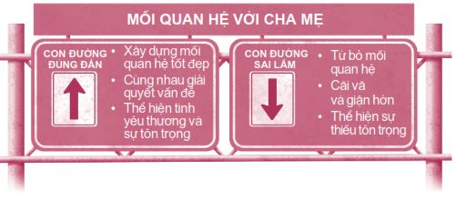
Tôi nghĩ tốt hơn bạn hãy chọn con đường đúng đắn, mặc dù có những lúc đó là một lựa chọn khó khăn. Nếu mối quan hệ giữa bạn và cha mẹ hiện đang vô cùng tồi tệ, hãy bắt đầu tạo những khoản tiền gửi ngay từ hôm nay, dù nhỏ đến đâu cũng được. Hãy thường xuyên nói những lời như: “Làm ơn”, “Cảm ơn”, “Con yêu cha/mẹ” và “Con có thể giúp gì được ạ?” . Sẽ có những lúc bạn phải dẹp bỏ lòng kiêu hãnh của mình và tuân theo những mệnh lệnh nghe có vẻ không hợp lý. Nhưng mười năm sau, bạn sẽ thấy vô cùng biết ơn vì nhờ đó bạn có được mối quan hệ ngọt ngào với cha mẹ mình. Vì vậy, đừng bao giờ từ bỏ cha mẹ, giống như cách bạn luôn hy vọng cha mẹ sẽ không bao giờ từ bỏ bạn vậy.
ĐIỀU THÚ VỊ TIẾP THEO
Tất tần tật những điều bạn luôn muốn biết về việc hẹn hò và tình dục sẽ được trình bày trong chương tiếp theo. Bạn sẽ không muốn bỏ lỡ phần này đâu, đúng không nào?
NHỮNG BƯỚC NHỎ
1. Ở khoảng trống bên dưới, hãy viết ra ba khoản tiền gửi lớn bạn có thể gửi vào Tài khoản Mối quan hệ của cha mẹ bạn.
KHOẢN TIỀN GỬI KHỔNG LỒ CHO CHA MẸ
_____________________________________
_____________________________________
_____________________________________
2. Hãy dọn dẹp phòng mình thật sạch sẽ. Sau đó che mắt cha hoặc mẹ lại và nói với họ bạn có một ngạc nhiên thú vị dành cho họ.
3. Ngay hôm nay, hãy dùng tất cả bốn câu nói ma thuật với cha mẹ bạn ít nhất một lần:
Làm ơn
Cảm ơn
Con yêu cha/mẹ
Con có thể giúp gì được ạ?
4. Bạn và cha mẹ bạn có liên tục cãi nhau về một vấn đề nào đó không? Nếu có, hãy đến trước mặt cha mẹ và nói: “Xin hãy giúp con hiểu được quan điểm của cha/mẹ”. Sau đó, hãy chú tâm lắng nghe và lặp lại những lời nói và cảm giác của cha mẹ cho đến khi họ cảm thấy mình được thấu hiểu.
5. Đâu là việc mà bạn thích làm cùng cha mẹ mình nhất? Đi xem phim, lái xe đi chơi ngày Chủ nhật hay đi ăn ngoài? Hãy cùng lên kế hoạch để sớm thực hiện lại việc đó.
Việc mình thích làm cùng cha/mẹ nhất: _________
6. Hãy chia sẻ về cuộc sống của mình với cha mẹ. Trong tuần này, hãy chọn một ngày để cởi mở và chia sẻ tâm tư, tình cảm của bạn với họ.
7. Nếu bạn cảm thấy gia đình bạn đang trở nên xa cách, hãy đề nghị cha mẹ thực hiện Buổi tối dành riêng cho gia đình. Cả nhà bạn hãy dành riêng một buổi tối mỗi tuần để cùng thực hiện một hoạt động vui vẻ nào đó.
8. Nếu bạn không được gặp cha hoặc mẹ thường xuyên, hãy viết cho họ một lời nhắn nhủ thể hiện tình yêu thương bạn dành cho họ.
9. Hãy cài nhạc chuông điện thoại là một bài hát có thể nhắc nhở bạn nói chuyện tử tế với cha mẹ mỗi khi họ gọi cho bạn, chẳng hạn như bài Shower the People của James Taylor.
10. Nếu cha mẹ bạn nghiện rượu hay dính vào ma túy hoặc nếu bạn đang bị ngược đãi, hãy ngay lập tức tìm kiếm sự giúp đỡ! Đừng chờ đợi!